Runs
FAST-LIVO2
completed
LiDAR + IMU + RGB (tightly coupled ESIKF)
none (odometry only)
odometry ATE: 0.277 m
Full dataset processed; odometry 22.3-427.0 s. Map NOT exported: fastlivo_mapping aborted (exit -6, std::runtime_error "context cannot be slept with because it's invalid") on SIGINT before its end-of-run PCD save (pcd_save.interval = -1).
R3LIVE
failed
LiDAR + IMU + RGB
none (odometry only)
odometry ATE: n/a
r3live_mapping killed (exit -9) shortly after IMU initialisation; 1 pose published. Peak RSS 24.8 GB and a 121 s stall of the resource sampler are consistent with an out-of-memory kill; no kernel log of 2026-11-11 is retained to confirm.
RTAB-Map LiDAR+RGB-D (run 1)
completed
LiDAR (ICP odometry) + RGB-D + IMU (gravity)
graph SLAM with loop closure
odometry ATE: 0.709 m
Full dataset processed; optimised graph, map and occupancy grid exported.
RTAB-Map LiDAR+RGB-D (run 2)
completed
LiDAR (ICP odometry) + RGB-D + IMU (gravity)
graph SLAM with loop closure
odometry ATE: 1.519 m
Full dataset processed; optimised graph, map and occupancy grid exported.
RTAB-Map RGB-D only (run 1)
completed tracking failed
RGB-D (visual odometry) + IMU (gravity)
graph SLAM with loop closure
odometry ATE: 6.476 m
Process finished cleanly and exported outputs, but visual odometry published null (lost) poses for 1308 of 2281 messages (from 120.6 s); valid odometry covers 57 % of the flight. Not a usable full-dataset trajectory.
RTAB-Map RGB-D only (run 2)
incomplete
RGB-D (visual odometry) + IMU (gravity)
graph SLAM with loop closure
odometry ATE: n/a
Run did not finish: no run.json, no trajectory/map export; pipeline.log ends mid-stream (odometry quality=0 in 1370 of 1650 updates). Cause of termination not recorded.
Run outcomes
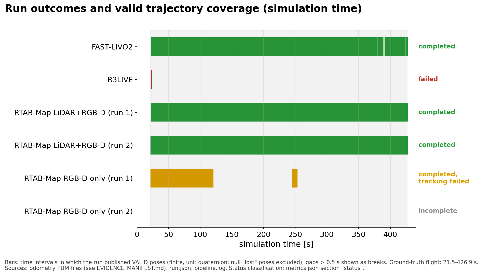
ATE: odometry vs optimised
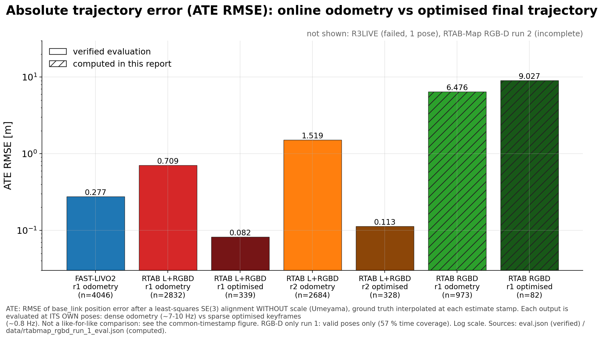
Fair common-timestamp comparison
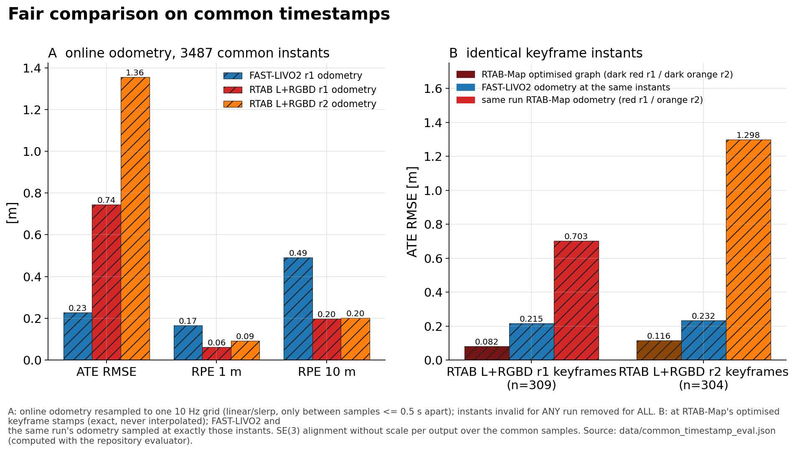
Horizontal vs vertical error
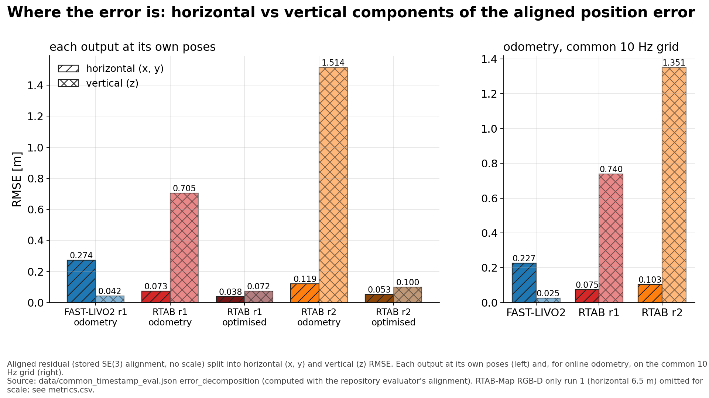
Trajectories and height
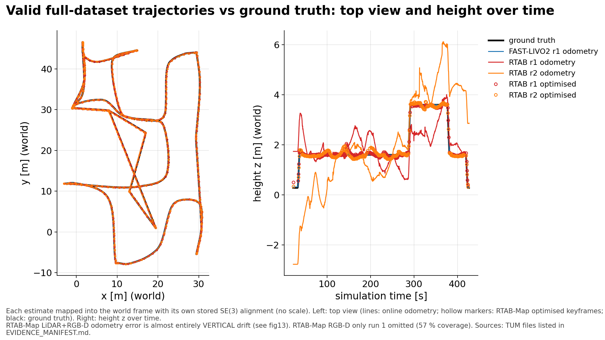
3D trajectories
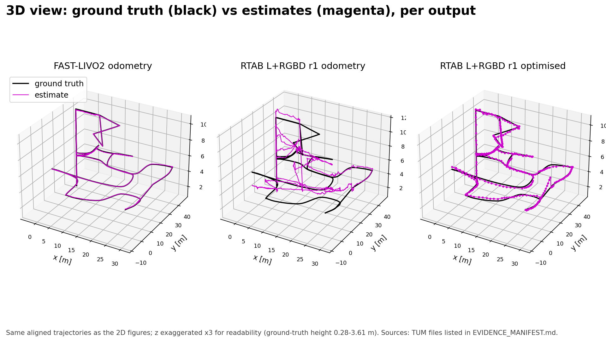
RPE
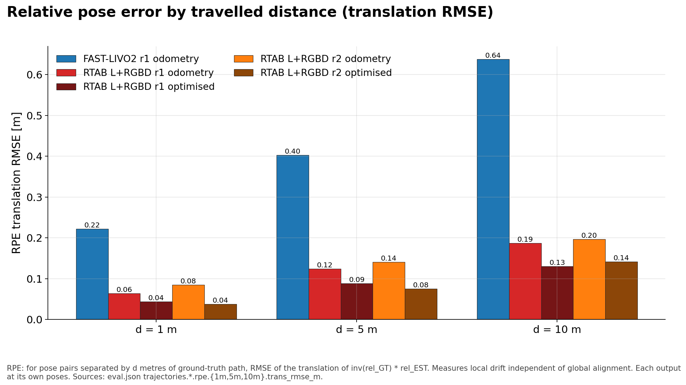
Tracking and pose graph
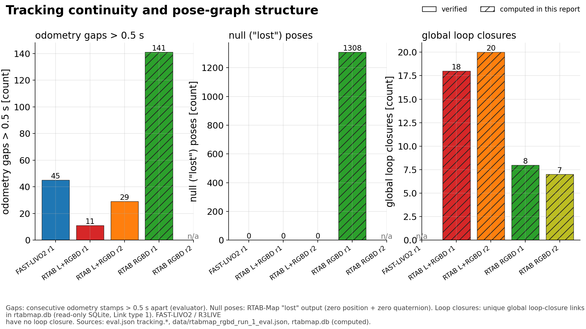
Resources
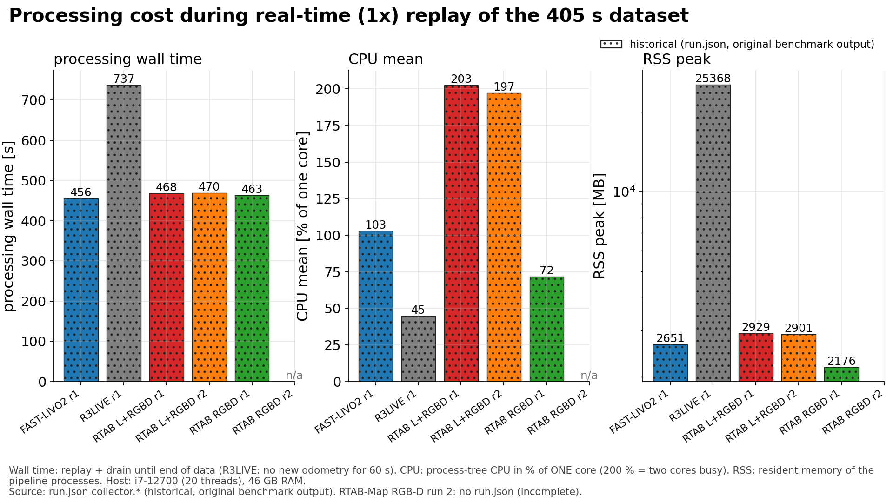
Map quality
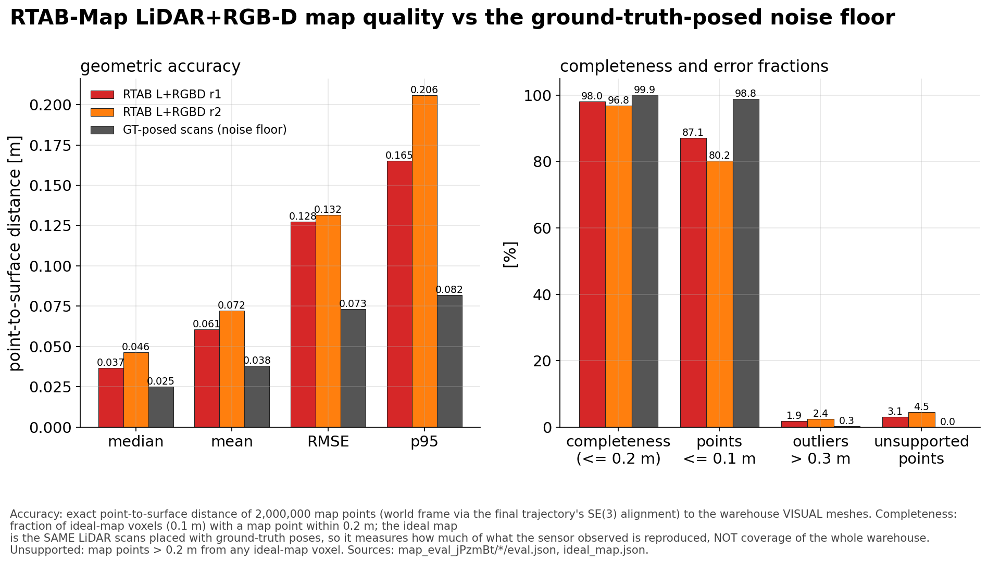
Map accuracy by class
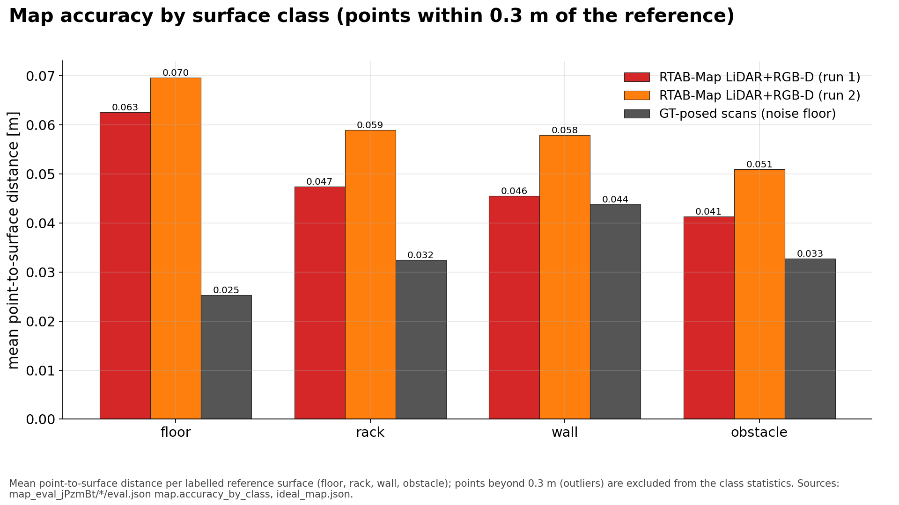
Map top views
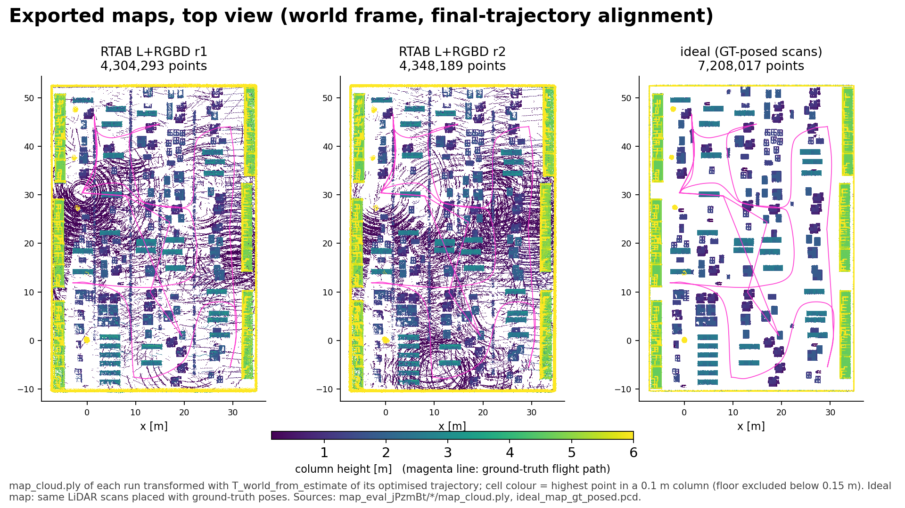
FAST-LIVO2 odometry
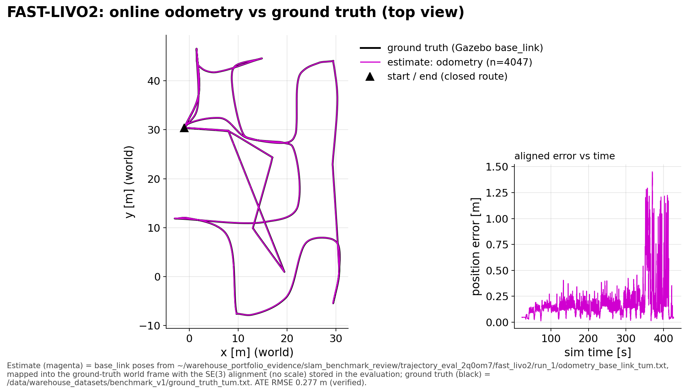
RTAB-Map r1 odometry
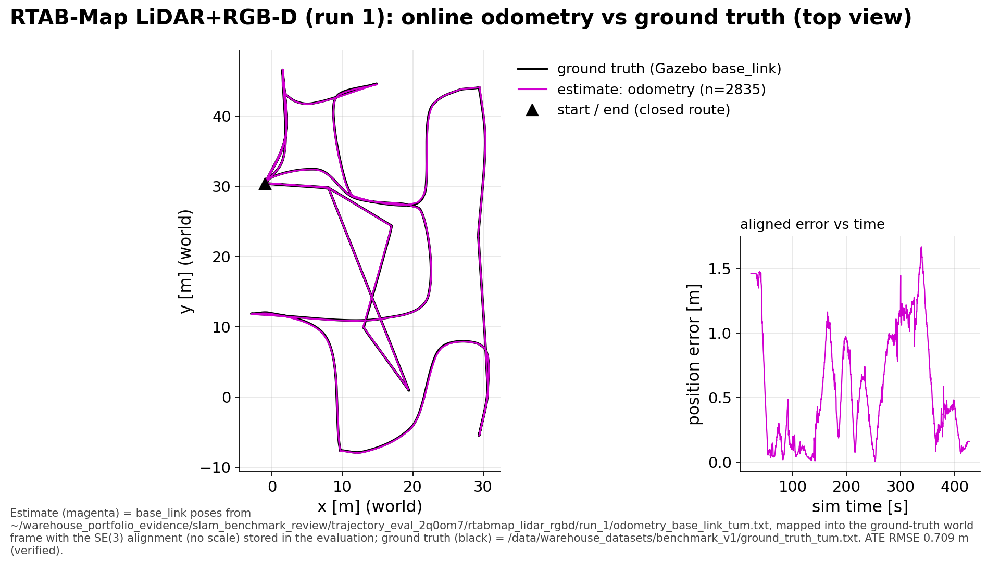
RTAB-Map r1 optimised
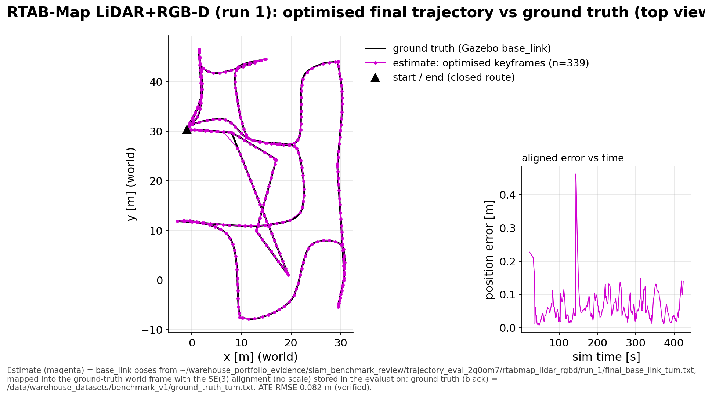
RTAB-Map r2 odometry
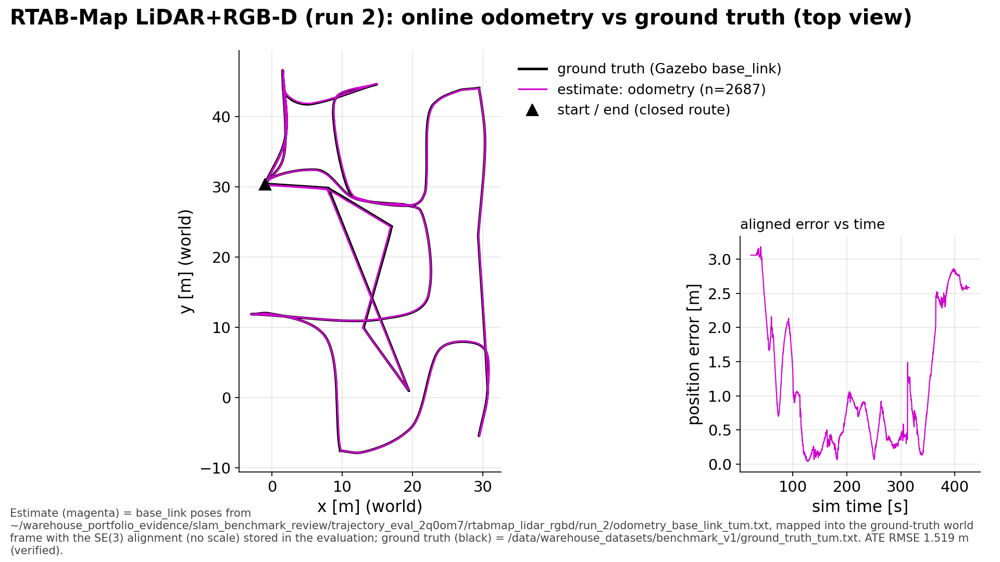
RTAB-Map r2 optimised
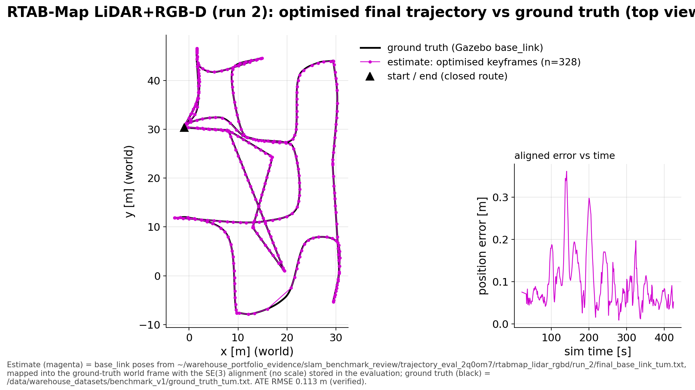
RTAB-Map RGB-D only r1
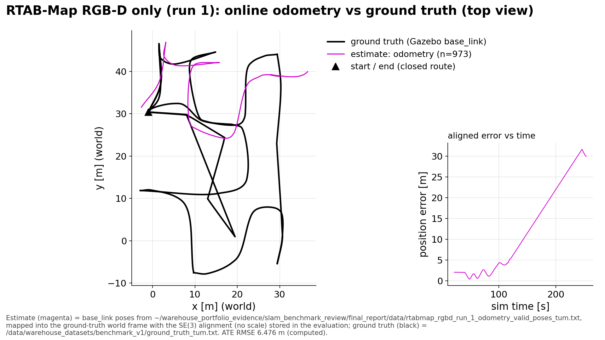
All metrics (460 records)
| run | section | metric | value | unit | provenance | source | key / calculation |
|---|---|---|---|---|---|---|---|
| fast_livo2/run_1 | status | status | completed | computed | classification from run.json + logs (see detail) | ||
| fast_livo2/run_1 | status | status_detail | Full dataset processed; odometry 22.3-427.0 s. Map NOT exported: fastlivo_mapping aborted (exit -6, std::runtime_error "context cannot be slept with because it's invalid") on SIGINT before its end-of-run PCD save (pcd_save.interval = -1). | computed | run.json, pipeline.log, collector.json | ||
| fast_livo2/run_1 | resources | processing_wall_s | 455.8 | s | historical | results_benchmark_v1/runs/fast_livo2/run_1/run.json | processing_wall_s |
| fast_livo2/run_1 | resources | replay_wall_s | 435.8 | s | historical | results_benchmark_v1/runs/fast_livo2/run_1/run.json | replay_wall_s |
| fast_livo2/run_1 | resources | drain_end_reason | reached_end_of_data | historical | results_benchmark_v1/runs/fast_livo2/run_1/run.json | drain_end_reason | |
| fast_livo2/run_1 | resources | failed_flag | False | historical | results_benchmark_v1/runs/fast_livo2/run_1/run.json | failed | |
| fast_livo2/run_1 | resources | odom_messages | 4047 | count | historical | results_benchmark_v1/runs/fast_livo2/run_1/run.json | collector.odom_messages |
| fast_livo2/run_1 | resources | cpu_mean_pct_one_core | 102.699 | % of one core | historical | results_benchmark_v1/runs/fast_livo2/run_1/run.json | collector.cpu_percent_one_core.mean |
| fast_livo2/run_1 | resources | cpu_peak_pct_one_core | 199.4 | % of one core | historical | results_benchmark_v1/runs/fast_livo2/run_1/run.json | collector.cpu_percent_one_core.peak |
| fast_livo2/run_1 | resources | rss_mean_mb | 1623.1 | MB | historical | results_benchmark_v1/runs/fast_livo2/run_1/run.json | collector.rss_mb.mean |
| fast_livo2/run_1 | resources | rss_peak_mb | 2650.9 | MB | historical | results_benchmark_v1/runs/fast_livo2/run_1/run.json | collector.rss_mb.peak |
| fast_livo2/run_1 | resources | latency_median_s | 0 | s (sim) | historical | results_benchmark_v1/runs/fast_livo2/run_1/run.json | collector.latency_sim_s.median |
| fast_livo2/run_1 | resources | latency_p95_s | 0.004 | s (sim) | historical | results_benchmark_v1/runs/fast_livo2/run_1/run.json | collector.latency_sim_s.p95 |
| fast_livo2/run_1 | resources | node_deaths_before_shutdown | 0 | count | historical | results_benchmark_v1/runs/fast_livo2/run_1/run.json | len(node_deaths_before_shutdown) |
| fast_livo2/run_1 | odometry | poses_evaluated | 4046 | count | verified | slam_benchmark_review/trajectory_eval_2q0om7/fast_livo2/run_1/eval.json | trajectories.odometry.poses_evaluated |
| fast_livo2/run_1 | odometry | coverage_of_gt_time | 0.997977 | fraction | verified | slam_benchmark_review/trajectory_eval_2q0om7/fast_livo2/run_1/eval.json | trajectories.odometry.coverage_of_gt_time |
| fast_livo2/run_1 | odometry | path_length_m | 396.1 | m | verified | slam_benchmark_review/trajectory_eval_2q0om7/fast_livo2/run_1/eval.json | trajectories.odometry.path_length_m |
| fast_livo2/run_1 | odometry | ate_rmse_m | 0.276797 | m | verified | slam_benchmark_review/trajectory_eval_2q0om7/fast_livo2/run_1/eval.json | trajectories.odometry.ate.rmse_m |
| fast_livo2/run_1 | odometry | ate_mean_m | 0.197219 | m | verified | slam_benchmark_review/trajectory_eval_2q0om7/fast_livo2/run_1/eval.json | trajectories.odometry.ate.mean_m |
| fast_livo2/run_1 | odometry | ate_median_m | 0.148945 | m | verified | slam_benchmark_review/trajectory_eval_2q0om7/fast_livo2/run_1/eval.json | trajectories.odometry.ate.median_m |
| fast_livo2/run_1 | odometry | ate_max_m | 1.45151 | m | verified | slam_benchmark_review/trajectory_eval_2q0om7/fast_livo2/run_1/eval.json | trajectories.odometry.ate.max_m |
| fast_livo2/run_1 | odometry | ate_rot_rmse_deg | 2.95024 | deg | verified | slam_benchmark_review/trajectory_eval_2q0om7/fast_livo2/run_1/eval.json | trajectories.odometry.ate.rot_rmse_deg |
| fast_livo2/run_1 | odometry | rpe_1m_trans_rmse_m | 0.22194 | m | verified | slam_benchmark_review/trajectory_eval_2q0om7/fast_livo2/run_1/eval.json | trajectories.odometry.rpe.1m.trans_rmse_m |
| fast_livo2/run_1 | odometry | rpe_1m_trans_mean_pct | 12.734 | % | verified | slam_benchmark_review/trajectory_eval_2q0om7/fast_livo2/run_1/eval.json | trajectories.odometry.rpe.1m.trans_mean_pct |
| fast_livo2/run_1 | odometry | rpe_5m_trans_rmse_m | 0.402822 | m | verified | slam_benchmark_review/trajectory_eval_2q0om7/fast_livo2/run_1/eval.json | trajectories.odometry.rpe.5m.trans_rmse_m |
| fast_livo2/run_1 | odometry | rpe_10m_trans_rmse_m | 0.637775 | m | verified | slam_benchmark_review/trajectory_eval_2q0om7/fast_livo2/run_1/eval.json | trajectories.odometry.rpe.10m.trans_rmse_m |
| fast_livo2/run_1 | odometry | rpe_10m_trans_mean_pct | 4.01513 | % | verified | slam_benchmark_review/trajectory_eval_2q0om7/fast_livo2/run_1/eval.json | trajectories.odometry.rpe.10m.trans_mean_pct |
| fast_livo2/run_1 | odometry | rpe_10m_rot_mean_deg_per_m | 0.263155 | deg/m | verified | slam_benchmark_review/trajectory_eval_2q0om7/fast_livo2/run_1/eval.json | trajectories.odometry.rpe.10m.rot_mean_deg_per_m |
| fast_livo2/run_1 | odometry | rpe_1s_trans_rmse_m | 0.202905 | m | verified | slam_benchmark_review/trajectory_eval_2q0om7/fast_livo2/run_1/eval.json | trajectories.odometry.rpe.1s.trans_rmse_m |
| fast_livo2/run_1 | odometry | rpe_1s_rot_rmse_deg | 3.355 | deg | verified | slam_benchmark_review/trajectory_eval_2q0om7/fast_livo2/run_1/eval.json | trajectories.odometry.rpe.1s.rot_rmse_deg |
| fast_livo2/run_1 | odometry | end_drift_trans_m | 0.01335 | m | verified | slam_benchmark_review/trajectory_eval_2q0om7/fast_livo2/run_1/eval.json | trajectories.odometry.end_drift.trans_m |
| fast_livo2/run_1 | odometry | end_drift_pct_of_path | 0.00337 | % | verified | slam_benchmark_review/trajectory_eval_2q0om7/fast_livo2/run_1/eval.json | trajectories.odometry.end_drift.trans_pct_of_path |
| fast_livo2/run_1 | odometry | end_drift_rot_deg | 0.049383 | deg | verified | slam_benchmark_review/trajectory_eval_2q0om7/fast_livo2/run_1/eval.json | trajectories.odometry.end_drift.rot_deg |
| fast_livo2/run_1 | final_optimised | note | no separate optimised trajectory (evaluator "final" = odometry) | unavailable | slam_benchmark_review/trajectory_eval_2q0om7/fast_livo2/run_1/eval.json | trajectories.final == trajectories.odometry | |
| fast_livo2/run_1 | tracking | gaps_over_0.5s | 45 | count | verified | slam_benchmark_review/trajectory_eval_2q0om7/fast_livo2/run_1/eval.json | tracking.odometry_gaps_over_0.5s |
| fast_livo2/run_1 | tracking | longest_gap_s | 1.584 | s | verified | slam_benchmark_review/trajectory_eval_2q0om7/fast_livo2/run_1/eval.json | tracking.longest_gap_s |
| fast_livo2/run_1 | tracking | null_or_identity_poses | 0 | count | verified | slam_benchmark_review/trajectory_eval_2q0om7/fast_livo2/run_1/eval.json | tracking.identity_poses_after_first |
| fast_livo2/run_1 | tracking | warn_error_log_lines | 3954 | count | verified | slam_benchmark_review/trajectory_eval_2q0om7/fast_livo2/run_1/eval.json | tracking.warn_error_lines |
| fast_livo2/run_1 | tracking_log | imu_lidar_not_synced_warnings | 3950 | count | computed | results_benchmark_v1/runs/fast_livo2/run_1/pipeline.log | regex count: IMU and LiDAR not synced |
| fast_livo2/run_1 | tracking_log | process_died_lines | 2 | count | computed | results_benchmark_v1/runs/fast_livo2/run_1/pipeline.log | regex count: process has died |
| fast_livo2/run_1 | pose_graph | global_loop_closures | count | unavailable | no loop closure in this pipeline (odometry only) | ||
| fast_livo2/run_1 | map | accuracy_mean_m | m | unavailable | no map file: PCD not saved (abort at shutdown) | ||
| r3live/run_1 | status | status | failed | computed | classification from run.json + logs (see detail) | ||
| r3live/run_1 | status | status_detail | r3live_mapping killed (exit -9) shortly after IMU initialisation; 1 pose published. Peak RSS 24.8 GB and a 121 s stall of the resource sampler are consistent with an out-of-memory kill; no kernel log of 2026-11-11 is retained to confirm. | computed | run.json, pipeline.log, collector.json | ||
| r3live/run_1 | resources | processing_wall_s | 737.4 | s | historical | results_benchmark_v1/runs/r3live/run_1/run.json | processing_wall_s |
| r3live/run_1 | resources | replay_wall_s | 677.4 | s | historical | results_benchmark_v1/runs/r3live/run_1/run.json | replay_wall_s |
| r3live/run_1 | resources | drain_end_reason | no_new_odometry_for_60s | historical | results_benchmark_v1/runs/r3live/run_1/run.json | drain_end_reason | |
| r3live/run_1 | resources | failed_flag | True | historical | results_benchmark_v1/runs/r3live/run_1/run.json | failed | |
| r3live/run_1 | resources | odom_messages | 1 | count | historical | results_benchmark_v1/runs/r3live/run_1/run.json | collector.odom_messages |
| r3live/run_1 | resources | cpu_mean_pct_one_core | 44.7883 | % of one core | historical | results_benchmark_v1/runs/r3live/run_1/run.json | collector.cpu_percent_one_core.mean |
| r3live/run_1 | resources | cpu_peak_pct_one_core | 348.5 | % of one core | historical | results_benchmark_v1/runs/r3live/run_1/run.json | collector.cpu_percent_one_core.peak |
| r3live/run_1 | resources | rss_mean_mb | 5444.12 | MB | historical | results_benchmark_v1/runs/r3live/run_1/run.json | collector.rss_mb.mean |
| r3live/run_1 | resources | rss_peak_mb | 25367.7 | MB | historical | results_benchmark_v1/runs/r3live/run_1/run.json | collector.rss_mb.peak |
| r3live/run_1 | resources | latency_median_s | 0.036 | s (sim) | historical | results_benchmark_v1/runs/r3live/run_1/run.json | collector.latency_sim_s.median |
| r3live/run_1 | resources | latency_p95_s | 0.036 | s (sim) | historical | results_benchmark_v1/runs/r3live/run_1/run.json | collector.latency_sim_s.p95 |
| r3live/run_1 | resources | node_deaths_before_shutdown | 1 | count | historical | results_benchmark_v1/runs/r3live/run_1/run.json | len(node_deaths_before_shutdown) |
| r3live/run_1 | odometry | ate_rmse_m | m | unavailable | failed run: 1 pose | ||
| r3live/run_1 | tracking_log | process_died_lines | 3 | count | computed | results_benchmark_v1/runs/r3live/run_1/pipeline.log | regex count: process has died |
| r3live/run_1 | pose_graph | global_loop_closures | count | unavailable | no loop closure in this pipeline (odometry only) | ||
| r3live/run_1 | map | accuracy_mean_m | m | unavailable | failed run | ||
| rtabmap_lidar_rgbd/run_1 | status | status | completed | computed | classification from run.json + logs (see detail) | ||
| rtabmap_lidar_rgbd/run_1 | status | status_detail | Full dataset processed; optimised graph, map and occupancy grid exported. | computed | run.json, pipeline.log, collector.json | ||
| rtabmap_lidar_rgbd/run_1 | resources | processing_wall_s | 468.1 | s | historical | results_benchmark_v1/runs/rtabmap_lidar_rgbd/run_1/run.json | processing_wall_s |
| rtabmap_lidar_rgbd/run_1 | resources | replay_wall_s | 448.1 | s | historical | results_benchmark_v1/runs/rtabmap_lidar_rgbd/run_1/run.json | replay_wall_s |
| rtabmap_lidar_rgbd/run_1 | resources | drain_end_reason | reached_end_of_data | historical | results_benchmark_v1/runs/rtabmap_lidar_rgbd/run_1/run.json | drain_end_reason | |
| rtabmap_lidar_rgbd/run_1 | resources | failed_flag | False | historical | results_benchmark_v1/runs/rtabmap_lidar_rgbd/run_1/run.json | failed | |
| rtabmap_lidar_rgbd/run_1 | resources | odom_messages | 2835 | count | historical | results_benchmark_v1/runs/rtabmap_lidar_rgbd/run_1/run.json | collector.odom_messages |
| rtabmap_lidar_rgbd/run_1 | resources | cpu_mean_pct_one_core | 202.542 | % of one core | historical | results_benchmark_v1/runs/rtabmap_lidar_rgbd/run_1/run.json | collector.cpu_percent_one_core.mean |
| rtabmap_lidar_rgbd/run_1 | resources | cpu_peak_pct_one_core | 480.5 | % of one core | historical | results_benchmark_v1/runs/rtabmap_lidar_rgbd/run_1/run.json | collector.cpu_percent_one_core.peak |
| rtabmap_lidar_rgbd/run_1 | resources | rss_mean_mb | 2287 | MB | historical | results_benchmark_v1/runs/rtabmap_lidar_rgbd/run_1/run.json | collector.rss_mb.mean |
| rtabmap_lidar_rgbd/run_1 | resources | rss_peak_mb | 2929.1 | MB | historical | results_benchmark_v1/runs/rtabmap_lidar_rgbd/run_1/run.json | collector.rss_mb.peak |
| rtabmap_lidar_rgbd/run_1 | resources | latency_median_s | 0.076 | s (sim) | historical | results_benchmark_v1/runs/rtabmap_lidar_rgbd/run_1/run.json | collector.latency_sim_s.median |
| rtabmap_lidar_rgbd/run_1 | resources | latency_p95_s | 0.16 | s (sim) | historical | results_benchmark_v1/runs/rtabmap_lidar_rgbd/run_1/run.json | collector.latency_sim_s.p95 |
| rtabmap_lidar_rgbd/run_1 | resources | node_deaths_before_shutdown | 0 | count | historical | results_benchmark_v1/runs/rtabmap_lidar_rgbd/run_1/run.json | len(node_deaths_before_shutdown) |
| rtabmap_lidar_rgbd/run_1 | odometry | poses_evaluated | 2832 | count | verified | slam_benchmark_review/trajectory_eval_2q0om7/rtabmap_lidar_rgbd/run_1/eval.json | trajectories.odometry.poses_evaluated |
| rtabmap_lidar_rgbd/run_1 | odometry | coverage_of_gt_time | 0.998441 | fraction | verified | slam_benchmark_review/trajectory_eval_2q0om7/rtabmap_lidar_rgbd/run_1/eval.json | trajectories.odometry.coverage_of_gt_time |
| rtabmap_lidar_rgbd/run_1 | odometry | path_length_m | 396.088 | m | verified | slam_benchmark_review/trajectory_eval_2q0om7/rtabmap_lidar_rgbd/run_1/eval.json | trajectories.odometry.path_length_m |
| rtabmap_lidar_rgbd/run_1 | odometry | ate_rmse_m | 0.708862 | m | verified | slam_benchmark_review/trajectory_eval_2q0om7/rtabmap_lidar_rgbd/run_1/eval.json | trajectories.odometry.ate.rmse_m |
| rtabmap_lidar_rgbd/run_1 | odometry | ate_mean_m | 0.550928 | m | verified | slam_benchmark_review/trajectory_eval_2q0om7/rtabmap_lidar_rgbd/run_1/eval.json | trajectories.odometry.ate.mean_m |
| rtabmap_lidar_rgbd/run_1 | odometry | ate_median_m | 0.411501 | m | verified | slam_benchmark_review/trajectory_eval_2q0om7/rtabmap_lidar_rgbd/run_1/eval.json | trajectories.odometry.ate.median_m |
| rtabmap_lidar_rgbd/run_1 | odometry | ate_max_m | 1.67042 | m | verified | slam_benchmark_review/trajectory_eval_2q0om7/rtabmap_lidar_rgbd/run_1/eval.json | trajectories.odometry.ate.max_m |
| rtabmap_lidar_rgbd/run_1 | odometry | ate_rot_rmse_deg | 3.05216 | deg | verified | slam_benchmark_review/trajectory_eval_2q0om7/rtabmap_lidar_rgbd/run_1/eval.json | trajectories.odometry.ate.rot_rmse_deg |
| rtabmap_lidar_rgbd/run_1 | odometry | rpe_1m_trans_rmse_m | 0.064263 | m | verified | slam_benchmark_review/trajectory_eval_2q0om7/rtabmap_lidar_rgbd/run_1/eval.json | trajectories.odometry.rpe.1m.trans_rmse_m |
| rtabmap_lidar_rgbd/run_1 | odometry | rpe_1m_trans_mean_pct | 3.94477 | % | verified | slam_benchmark_review/trajectory_eval_2q0om7/rtabmap_lidar_rgbd/run_1/eval.json | trajectories.odometry.rpe.1m.trans_mean_pct |
| rtabmap_lidar_rgbd/run_1 | odometry | rpe_5m_trans_rmse_m | 0.124079 | m | verified | slam_benchmark_review/trajectory_eval_2q0om7/rtabmap_lidar_rgbd/run_1/eval.json | trajectories.odometry.rpe.5m.trans_rmse_m |
| rtabmap_lidar_rgbd/run_1 | odometry | rpe_10m_trans_rmse_m | 0.187631 | m | verified | slam_benchmark_review/trajectory_eval_2q0om7/rtabmap_lidar_rgbd/run_1/eval.json | trajectories.odometry.rpe.10m.trans_rmse_m |
| rtabmap_lidar_rgbd/run_1 | odometry | rpe_10m_trans_mean_pct | 1.32574 | % | verified | slam_benchmark_review/trajectory_eval_2q0om7/rtabmap_lidar_rgbd/run_1/eval.json | trajectories.odometry.rpe.10m.trans_mean_pct |
| rtabmap_lidar_rgbd/run_1 | odometry | rpe_10m_rot_mean_deg_per_m | 0.131738 | deg/m | verified | slam_benchmark_review/trajectory_eval_2q0om7/rtabmap_lidar_rgbd/run_1/eval.json | trajectories.odometry.rpe.10m.rot_mean_deg_per_m |
| rtabmap_lidar_rgbd/run_1 | odometry | rpe_1s_trans_rmse_m | 0.057219 | m | verified | slam_benchmark_review/trajectory_eval_2q0om7/rtabmap_lidar_rgbd/run_1/eval.json | trajectories.odometry.rpe.1s.trans_rmse_m |
| rtabmap_lidar_rgbd/run_1 | odometry | rpe_1s_rot_rmse_deg | 0.881637 | deg | verified | slam_benchmark_review/trajectory_eval_2q0om7/rtabmap_lidar_rgbd/run_1/eval.json | trajectories.odometry.rpe.1s.rot_rmse_deg |
| rtabmap_lidar_rgbd/run_1 | odometry | end_drift_trans_m | 1.37283 | m | verified | slam_benchmark_review/trajectory_eval_2q0om7/rtabmap_lidar_rgbd/run_1/eval.json | trajectories.odometry.end_drift.trans_m |
| rtabmap_lidar_rgbd/run_1 | odometry | end_drift_pct_of_path | 0.346597 | % | verified | slam_benchmark_review/trajectory_eval_2q0om7/rtabmap_lidar_rgbd/run_1/eval.json | trajectories.odometry.end_drift.trans_pct_of_path |
| rtabmap_lidar_rgbd/run_1 | odometry | end_drift_rot_deg | 7.11175 | deg | verified | slam_benchmark_review/trajectory_eval_2q0om7/rtabmap_lidar_rgbd/run_1/eval.json | trajectories.odometry.end_drift.rot_deg |
| rtabmap_lidar_rgbd/run_1 | final_optimised | poses_evaluated | 339 | count | verified | slam_benchmark_review/trajectory_eval_2q0om7/rtabmap_lidar_rgbd/run_1/eval.json | trajectories.final.poses_evaluated |
| rtabmap_lidar_rgbd/run_1 | final_optimised | coverage_of_gt_time | 0.991533 | fraction | verified | slam_benchmark_review/trajectory_eval_2q0om7/rtabmap_lidar_rgbd/run_1/eval.json | trajectories.final.coverage_of_gt_time |
| rtabmap_lidar_rgbd/run_1 | final_optimised | path_length_m | 393.938 | m | verified | slam_benchmark_review/trajectory_eval_2q0om7/rtabmap_lidar_rgbd/run_1/eval.json | trajectories.final.path_length_m |
| rtabmap_lidar_rgbd/run_1 | final_optimised | ate_rmse_m | 0.081781 | m | verified | slam_benchmark_review/trajectory_eval_2q0om7/rtabmap_lidar_rgbd/run_1/eval.json | trajectories.final.ate.rmse_m |
| rtabmap_lidar_rgbd/run_1 | final_optimised | ate_mean_m | 0.06458 | m | verified | slam_benchmark_review/trajectory_eval_2q0om7/rtabmap_lidar_rgbd/run_1/eval.json | trajectories.final.ate.mean_m |
| rtabmap_lidar_rgbd/run_1 | final_optimised | ate_median_m | 0.052778 | m | verified | slam_benchmark_review/trajectory_eval_2q0om7/rtabmap_lidar_rgbd/run_1/eval.json | trajectories.final.ate.median_m |
| rtabmap_lidar_rgbd/run_1 | final_optimised | ate_max_m | 0.462479 | m | verified | slam_benchmark_review/trajectory_eval_2q0om7/rtabmap_lidar_rgbd/run_1/eval.json | trajectories.final.ate.max_m |
| rtabmap_lidar_rgbd/run_1 | final_optimised | ate_rot_rmse_deg | 0.821298 | deg | verified | slam_benchmark_review/trajectory_eval_2q0om7/rtabmap_lidar_rgbd/run_1/eval.json | trajectories.final.ate.rot_rmse_deg |
| rtabmap_lidar_rgbd/run_1 | final_optimised | rpe_1m_trans_rmse_m | 0.043922 | m | verified | slam_benchmark_review/trajectory_eval_2q0om7/rtabmap_lidar_rgbd/run_1/eval.json | trajectories.final.rpe.1m.trans_rmse_m |
| rtabmap_lidar_rgbd/run_1 | final_optimised | rpe_1m_trans_mean_pct | 2.27123 | % | verified | slam_benchmark_review/trajectory_eval_2q0om7/rtabmap_lidar_rgbd/run_1/eval.json | trajectories.final.rpe.1m.trans_mean_pct |
| rtabmap_lidar_rgbd/run_1 | final_optimised | rpe_5m_trans_rmse_m | 0.088204 | m | verified | slam_benchmark_review/trajectory_eval_2q0om7/rtabmap_lidar_rgbd/run_1/eval.json | trajectories.final.rpe.5m.trans_rmse_m |
| rtabmap_lidar_rgbd/run_1 | final_optimised | rpe_10m_trans_rmse_m | 0.130519 | m | verified | slam_benchmark_review/trajectory_eval_2q0om7/rtabmap_lidar_rgbd/run_1/eval.json | trajectories.final.rpe.10m.trans_rmse_m |
| rtabmap_lidar_rgbd/run_1 | final_optimised | rpe_10m_trans_mean_pct | 0.94072 | % | verified | slam_benchmark_review/trajectory_eval_2q0om7/rtabmap_lidar_rgbd/run_1/eval.json | trajectories.final.rpe.10m.trans_mean_pct |
| rtabmap_lidar_rgbd/run_1 | final_optimised | rpe_10m_rot_mean_deg_per_m | 0.079459 | deg/m | verified | slam_benchmark_review/trajectory_eval_2q0om7/rtabmap_lidar_rgbd/run_1/eval.json | trajectories.final.rpe.10m.rot_mean_deg_per_m |
| rtabmap_lidar_rgbd/run_1 | final_optimised | rpe_1s_trans_rmse_m | 0.038037 | m | verified | slam_benchmark_review/trajectory_eval_2q0om7/rtabmap_lidar_rgbd/run_1/eval.json | trajectories.final.rpe.1s.trans_rmse_m |
| rtabmap_lidar_rgbd/run_1 | final_optimised | rpe_1s_rot_rmse_deg | 0.592073 | deg | verified | slam_benchmark_review/trajectory_eval_2q0om7/rtabmap_lidar_rgbd/run_1/eval.json | trajectories.final.rpe.1s.rot_rmse_deg |
| rtabmap_lidar_rgbd/run_1 | final_optimised | end_drift_trans_m | 0.094388 | m | verified | slam_benchmark_review/trajectory_eval_2q0om7/rtabmap_lidar_rgbd/run_1/eval.json | trajectories.final.end_drift.trans_m |
| rtabmap_lidar_rgbd/run_1 | final_optimised | end_drift_pct_of_path | 0.02396 | % | verified | slam_benchmark_review/trajectory_eval_2q0om7/rtabmap_lidar_rgbd/run_1/eval.json | trajectories.final.end_drift.trans_pct_of_path |
| rtabmap_lidar_rgbd/run_1 | final_optimised | end_drift_rot_deg | 0.296929 | deg | verified | slam_benchmark_review/trajectory_eval_2q0om7/rtabmap_lidar_rgbd/run_1/eval.json | trajectories.final.end_drift.rot_deg |
| rtabmap_lidar_rgbd/run_1 | tracking | gaps_over_0.5s | 11 | count | verified | slam_benchmark_review/trajectory_eval_2q0om7/rtabmap_lidar_rgbd/run_1/eval.json | tracking.odometry_gaps_over_0.5s |
| rtabmap_lidar_rgbd/run_1 | tracking | longest_gap_s | 0.9 | s | verified | slam_benchmark_review/trajectory_eval_2q0om7/rtabmap_lidar_rgbd/run_1/eval.json | tracking.longest_gap_s |
| rtabmap_lidar_rgbd/run_1 | tracking | null_or_identity_poses | 0 | count | verified | slam_benchmark_review/trajectory_eval_2q0om7/rtabmap_lidar_rgbd/run_1/eval.json | tracking.identity_poses_after_first |
| rtabmap_lidar_rgbd/run_1 | tracking | warn_error_log_lines | 39 | count | verified | slam_benchmark_review/trajectory_eval_2q0om7/rtabmap_lidar_rgbd/run_1/eval.json | tracking.warn_error_lines |
| rtabmap_lidar_rgbd/run_1 | tracking_log | process_died_lines | 2 | count | computed | results_benchmark_v1/runs/rtabmap_lidar_rgbd/run_1/pipeline.log | regex count: process has died |
| rtabmap_lidar_rgbd/run_1 | pose_graph | nodes | 339 | count | computed | results_benchmark_v1/runs/rtabmap_lidar_rgbd/run_1/rtabmap.db | sqlite read-only: Node/Link tables, unique undirected pairs per link type (0 neighbor, 1 global loop closure, 2 proximity) |
| rtabmap_lidar_rgbd/run_1 | pose_graph | neighbor_links | 338 | count | computed | results_benchmark_v1/runs/rtabmap_lidar_rgbd/run_1/rtabmap.db | sqlite read-only: Node/Link tables, unique undirected pairs per link type (0 neighbor, 1 global loop closure, 2 proximity) |
| rtabmap_lidar_rgbd/run_1 | pose_graph | global_loop_closures | 18 | count | computed | results_benchmark_v1/runs/rtabmap_lidar_rgbd/run_1/rtabmap.db | sqlite read-only: Node/Link tables, unique undirected pairs per link type (0 neighbor, 1 global loop closure, 2 proximity) |
| rtabmap_lidar_rgbd/run_1 | pose_graph | proximity_links | 349 | count | computed | results_benchmark_v1/runs/rtabmap_lidar_rgbd/run_1/rtabmap.db | sqlite read-only: Node/Link tables, unique undirected pairs per link type (0 neighbor, 1 global loop closure, 2 proximity) |
| rtabmap_lidar_rgbd/run_1 | pose_graph | loop_closure_node_gap_median | 297 | count | computed | results_benchmark_v1/runs/rtabmap_lidar_rgbd/run_1/rtabmap.db | sqlite read-only: Node/Link tables, unique undirected pairs per link type (0 neighbor, 1 global loop closure, 2 proximity) |
| rtabmap_lidar_rgbd/run_1 | pose_graph | loop_closure_node_gap_max | 300 | count | computed | results_benchmark_v1/runs/rtabmap_lidar_rgbd/run_1/rtabmap.db | sqlite read-only: Node/Link tables, unique undirected pairs per link type (0 neighbor, 1 global loop closure, 2 proximity) |
| rtabmap_lidar_rgbd/run_1 | map | points_total | 4304293 | count | verified | slam_benchmark_review/map_eval_jPzmBt/rtabmap_lidar_rgbd/run_1/eval.json | map.points_total |
| rtabmap_lidar_rgbd/run_1 | map | points_evaluated | 2000000 | count | verified | slam_benchmark_review/map_eval_jPzmBt/rtabmap_lidar_rgbd/run_1/eval.json | map.points_evaluated |
| rtabmap_lidar_rgbd/run_1 | map | accuracy_mean_m | 0.060647 | m | verified | slam_benchmark_review/map_eval_jPzmBt/rtabmap_lidar_rgbd/run_1/eval.json | map.accuracy.mean_m |
| rtabmap_lidar_rgbd/run_1 | map | accuracy_median_m | 0.036761 | m | verified | slam_benchmark_review/map_eval_jPzmBt/rtabmap_lidar_rgbd/run_1/eval.json | map.accuracy.median_m |
| rtabmap_lidar_rgbd/run_1 | map | accuracy_rmse_m | 0.127526 | m | verified | slam_benchmark_review/map_eval_jPzmBt/rtabmap_lidar_rgbd/run_1/eval.json | map.accuracy.rmse_m |
| rtabmap_lidar_rgbd/run_1 | map | accuracy_p90_m | 0.115021 | m | verified | slam_benchmark_review/map_eval_jPzmBt/rtabmap_lidar_rgbd/run_1/eval.json | map.accuracy.p90_m |
| rtabmap_lidar_rgbd/run_1 | map | accuracy_p95_m | 0.165068 | m | verified | slam_benchmark_review/map_eval_jPzmBt/rtabmap_lidar_rgbd/run_1/eval.json | map.accuracy.p95_m |
| rtabmap_lidar_rgbd/run_1 | map | within_0.1m_fraction | 0.871185 | fraction | verified | slam_benchmark_review/map_eval_jPzmBt/rtabmap_lidar_rgbd/run_1/eval.json | map.accuracy.within_0.1m |
| rtabmap_lidar_rgbd/run_1 | map | outliers_over_0.3m_fraction | 0.018712 | fraction | verified | slam_benchmark_review/map_eval_jPzmBt/rtabmap_lidar_rgbd/run_1/eval.json | map.accuracy.outliers_over_0.3m |
| rtabmap_lidar_rgbd/run_1 | map | completeness_within_0.2m | 0.979859 | fraction | verified | slam_benchmark_review/map_eval_jPzmBt/rtabmap_lidar_rgbd/run_1/eval.json | map.completeness.covered_within_0.2m |
| rtabmap_lidar_rgbd/run_1 | map | ideal_voxels | 1582956 | count | verified | slam_benchmark_review/map_eval_jPzmBt/rtabmap_lidar_rgbd/run_1/eval.json | map.completeness.ideal_voxels |
| rtabmap_lidar_rgbd/run_1 | map | unsupported_points_fraction | 0.031106 | fraction | verified | slam_benchmark_review/map_eval_jPzmBt/rtabmap_lidar_rgbd/run_1/eval.json | map.unsupported_points_fraction |
| rtabmap_lidar_rgbd/run_1 | map | occupied_volume_m3 | 1077.5 | m3 | verified | slam_benchmark_review/map_eval_jPzmBt/rtabmap_lidar_rgbd/run_1/eval.json | map.occupied_volume_m3 |
| rtabmap_lidar_rgbd/run_1 | map | accuracy_mean_m_floor | 0.062613 | m | verified | slam_benchmark_review/map_eval_jPzmBt/rtabmap_lidar_rgbd/run_1/eval.json | map.accuracy_by_class.floor.mean_m |
| rtabmap_lidar_rgbd/run_1 | map | accuracy_p95_m_floor | 0.193167 | m | verified | slam_benchmark_review/map_eval_jPzmBt/rtabmap_lidar_rgbd/run_1/eval.json | map.accuracy_by_class.floor.p95_m |
| rtabmap_lidar_rgbd/run_1 | map | accuracy_mean_m_rack | 0.047378 | m | verified | slam_benchmark_review/map_eval_jPzmBt/rtabmap_lidar_rgbd/run_1/eval.json | map.accuracy_by_class.rack.mean_m |
| rtabmap_lidar_rgbd/run_1 | map | accuracy_p95_m_rack | 0.148078 | m | verified | slam_benchmark_review/map_eval_jPzmBt/rtabmap_lidar_rgbd/run_1/eval.json | map.accuracy_by_class.rack.p95_m |
| rtabmap_lidar_rgbd/run_1 | map | accuracy_mean_m_wall | 0.045525 | m | verified | slam_benchmark_review/map_eval_jPzmBt/rtabmap_lidar_rgbd/run_1/eval.json | map.accuracy_by_class.wall.mean_m |
| rtabmap_lidar_rgbd/run_1 | map | accuracy_p95_m_wall | 0.117391 | m | verified | slam_benchmark_review/map_eval_jPzmBt/rtabmap_lidar_rgbd/run_1/eval.json | map.accuracy_by_class.wall.p95_m |
| rtabmap_lidar_rgbd/run_1 | map | accuracy_mean_m_obstacle | 0.041329 | m | verified | slam_benchmark_review/map_eval_jPzmBt/rtabmap_lidar_rgbd/run_1/eval.json | map.accuracy_by_class.obstacle.mean_m |
| rtabmap_lidar_rgbd/run_1 | map | accuracy_p95_m_obstacle | 0.115252 | m | verified | slam_benchmark_review/map_eval_jPzmBt/rtabmap_lidar_rgbd/run_1/eval.json | map.accuracy_by_class.obstacle.p95_m |
| rtabmap_lidar_rgbd/run_2 | status | status | completed | computed | classification from run.json + logs (see detail) | ||
| rtabmap_lidar_rgbd/run_2 | status | status_detail | Full dataset processed; optimised graph, map and occupancy grid exported. | computed | run.json, pipeline.log, collector.json | ||
| rtabmap_lidar_rgbd/run_2 | resources | processing_wall_s | 469.6 | s | historical | results_benchmark_v1/runs/rtabmap_lidar_rgbd/run_2/run.json | processing_wall_s |
| rtabmap_lidar_rgbd/run_2 | resources | replay_wall_s | 449.6 | s | historical | results_benchmark_v1/runs/rtabmap_lidar_rgbd/run_2/run.json | replay_wall_s |
| rtabmap_lidar_rgbd/run_2 | resources | drain_end_reason | reached_end_of_data | historical | results_benchmark_v1/runs/rtabmap_lidar_rgbd/run_2/run.json | drain_end_reason | |
| rtabmap_lidar_rgbd/run_2 | resources | failed_flag | False | historical | results_benchmark_v1/runs/rtabmap_lidar_rgbd/run_2/run.json | failed | |
| rtabmap_lidar_rgbd/run_2 | resources | odom_messages | 2687 | count | historical | results_benchmark_v1/runs/rtabmap_lidar_rgbd/run_2/run.json | collector.odom_messages |
| rtabmap_lidar_rgbd/run_2 | resources | cpu_mean_pct_one_core | 197.052 | % of one core | historical | results_benchmark_v1/runs/rtabmap_lidar_rgbd/run_2/run.json | collector.cpu_percent_one_core.mean |
| rtabmap_lidar_rgbd/run_2 | resources | cpu_peak_pct_one_core | 501.2 | % of one core | historical | results_benchmark_v1/runs/rtabmap_lidar_rgbd/run_2/run.json | collector.cpu_percent_one_core.peak |
| rtabmap_lidar_rgbd/run_2 | resources | rss_mean_mb | 2241.24 | MB | historical | results_benchmark_v1/runs/rtabmap_lidar_rgbd/run_2/run.json | collector.rss_mb.mean |
| rtabmap_lidar_rgbd/run_2 | resources | rss_peak_mb | 2901.2 | MB | historical | results_benchmark_v1/runs/rtabmap_lidar_rgbd/run_2/run.json | collector.rss_mb.peak |
| rtabmap_lidar_rgbd/run_2 | resources | latency_median_s | 0.076 | s (sim) | historical | results_benchmark_v1/runs/rtabmap_lidar_rgbd/run_2/run.json | collector.latency_sim_s.median |
| rtabmap_lidar_rgbd/run_2 | resources | latency_p95_s | 0.184 | s (sim) | historical | results_benchmark_v1/runs/rtabmap_lidar_rgbd/run_2/run.json | collector.latency_sim_s.p95 |
| rtabmap_lidar_rgbd/run_2 | resources | node_deaths_before_shutdown | 0 | count | historical | results_benchmark_v1/runs/rtabmap_lidar_rgbd/run_2/run.json | len(node_deaths_before_shutdown) |
| rtabmap_lidar_rgbd/run_2 | odometry | poses_evaluated | 2684 | count | verified | slam_benchmark_review/trajectory_eval_2q0om7/rtabmap_lidar_rgbd/run_2/eval.json | trajectories.odometry.poses_evaluated |
| rtabmap_lidar_rgbd/run_2 | odometry | coverage_of_gt_time | 0.998441 | fraction | verified | slam_benchmark_review/trajectory_eval_2q0om7/rtabmap_lidar_rgbd/run_2/eval.json | trajectories.odometry.coverage_of_gt_time |
| rtabmap_lidar_rgbd/run_2 | odometry | path_length_m | 396.083 | m | verified | slam_benchmark_review/trajectory_eval_2q0om7/rtabmap_lidar_rgbd/run_2/eval.json | trajectories.odometry.path_length_m |
| rtabmap_lidar_rgbd/run_2 | odometry | ate_rmse_m | 1.51871 | m | verified | slam_benchmark_review/trajectory_eval_2q0om7/rtabmap_lidar_rgbd/run_2/eval.json | trajectories.odometry.ate.rmse_m |
| rtabmap_lidar_rgbd/run_2 | odometry | ate_mean_m | 1.16792 | m | verified | slam_benchmark_review/trajectory_eval_2q0om7/rtabmap_lidar_rgbd/run_2/eval.json | trajectories.odometry.ate.mean_m |
| rtabmap_lidar_rgbd/run_2 | odometry | ate_median_m | 0.81804 | m | verified | slam_benchmark_review/trajectory_eval_2q0om7/rtabmap_lidar_rgbd/run_2/eval.json | trajectories.odometry.ate.median_m |
| rtabmap_lidar_rgbd/run_2 | odometry | ate_max_m | 3.18342 | m | verified | slam_benchmark_review/trajectory_eval_2q0om7/rtabmap_lidar_rgbd/run_2/eval.json | trajectories.odometry.ate.max_m |
| rtabmap_lidar_rgbd/run_2 | odometry | ate_rot_rmse_deg | 4.75634 | deg | verified | slam_benchmark_review/trajectory_eval_2q0om7/rtabmap_lidar_rgbd/run_2/eval.json | trajectories.odometry.ate.rot_rmse_deg |
| rtabmap_lidar_rgbd/run_2 | odometry | rpe_1m_trans_rmse_m | 0.084696 | m | verified | slam_benchmark_review/trajectory_eval_2q0om7/rtabmap_lidar_rgbd/run_2/eval.json | trajectories.odometry.rpe.1m.trans_rmse_m |
| rtabmap_lidar_rgbd/run_2 | odometry | rpe_1m_trans_mean_pct | 4.02185 | % | verified | slam_benchmark_review/trajectory_eval_2q0om7/rtabmap_lidar_rgbd/run_2/eval.json | trajectories.odometry.rpe.1m.trans_mean_pct |
| rtabmap_lidar_rgbd/run_2 | odometry | rpe_5m_trans_rmse_m | 0.140543 | m | verified | slam_benchmark_review/trajectory_eval_2q0om7/rtabmap_lidar_rgbd/run_2/eval.json | trajectories.odometry.rpe.5m.trans_rmse_m |
| rtabmap_lidar_rgbd/run_2 | odometry | rpe_10m_trans_rmse_m | 0.1965 | m | verified | slam_benchmark_review/trajectory_eval_2q0om7/rtabmap_lidar_rgbd/run_2/eval.json | trajectories.odometry.rpe.10m.trans_rmse_m |
| rtabmap_lidar_rgbd/run_2 | odometry | rpe_10m_trans_mean_pct | 1.35007 | % | verified | slam_benchmark_review/trajectory_eval_2q0om7/rtabmap_lidar_rgbd/run_2/eval.json | trajectories.odometry.rpe.10m.trans_mean_pct |
| rtabmap_lidar_rgbd/run_2 | odometry | rpe_10m_rot_mean_deg_per_m | 0.135813 | deg/m | verified | slam_benchmark_review/trajectory_eval_2q0om7/rtabmap_lidar_rgbd/run_2/eval.json | trajectories.odometry.rpe.10m.rot_mean_deg_per_m |
| rtabmap_lidar_rgbd/run_2 | odometry | rpe_1s_trans_rmse_m | 0.07131 | m | verified | slam_benchmark_review/trajectory_eval_2q0om7/rtabmap_lidar_rgbd/run_2/eval.json | trajectories.odometry.rpe.1s.trans_rmse_m |
| rtabmap_lidar_rgbd/run_2 | odometry | rpe_1s_rot_rmse_deg | 0.87595 | deg | verified | slam_benchmark_review/trajectory_eval_2q0om7/rtabmap_lidar_rgbd/run_2/eval.json | trajectories.odometry.rpe.1s.rot_rmse_deg |
| rtabmap_lidar_rgbd/run_2 | odometry | end_drift_trans_m | 5.63111 | m | verified | slam_benchmark_review/trajectory_eval_2q0om7/rtabmap_lidar_rgbd/run_2/eval.json | trajectories.odometry.end_drift.trans_m |
| rtabmap_lidar_rgbd/run_2 | odometry | end_drift_pct_of_path | 1.4217 | % | verified | slam_benchmark_review/trajectory_eval_2q0om7/rtabmap_lidar_rgbd/run_2/eval.json | trajectories.odometry.end_drift.trans_pct_of_path |
| rtabmap_lidar_rgbd/run_2 | odometry | end_drift_rot_deg | 2.7803 | deg | verified | slam_benchmark_review/trajectory_eval_2q0om7/rtabmap_lidar_rgbd/run_2/eval.json | trajectories.odometry.end_drift.rot_deg |
| rtabmap_lidar_rgbd/run_2 | final_optimised | poses_evaluated | 328 | count | verified | slam_benchmark_review/trajectory_eval_2q0om7/rtabmap_lidar_rgbd/run_2/eval.json | trajectories.final.poses_evaluated |
| rtabmap_lidar_rgbd/run_2 | final_optimised | coverage_of_gt_time | 0.99326 | fraction | verified | slam_benchmark_review/trajectory_eval_2q0om7/rtabmap_lidar_rgbd/run_2/eval.json | trajectories.final.coverage_of_gt_time |
| rtabmap_lidar_rgbd/run_2 | final_optimised | path_length_m | 394.887 | m | verified | slam_benchmark_review/trajectory_eval_2q0om7/rtabmap_lidar_rgbd/run_2/eval.json | trajectories.final.path_length_m |
| rtabmap_lidar_rgbd/run_2 | final_optimised | ate_rmse_m | 0.112918 | m | verified | slam_benchmark_review/trajectory_eval_2q0om7/rtabmap_lidar_rgbd/run_2/eval.json | trajectories.final.ate.rmse_m |
| rtabmap_lidar_rgbd/run_2 | final_optimised | ate_mean_m | 0.094958 | m | verified | slam_benchmark_review/trajectory_eval_2q0om7/rtabmap_lidar_rgbd/run_2/eval.json | trajectories.final.ate.mean_m |
| rtabmap_lidar_rgbd/run_2 | final_optimised | ate_median_m | 0.077153 | m | verified | slam_benchmark_review/trajectory_eval_2q0om7/rtabmap_lidar_rgbd/run_2/eval.json | trajectories.final.ate.median_m |
| rtabmap_lidar_rgbd/run_2 | final_optimised | ate_max_m | 0.361712 | m | verified | slam_benchmark_review/trajectory_eval_2q0om7/rtabmap_lidar_rgbd/run_2/eval.json | trajectories.final.ate.max_m |
| rtabmap_lidar_rgbd/run_2 | final_optimised | ate_rot_rmse_deg | 0.891143 | deg | verified | slam_benchmark_review/trajectory_eval_2q0om7/rtabmap_lidar_rgbd/run_2/eval.json | trajectories.final.ate.rot_rmse_deg |
| rtabmap_lidar_rgbd/run_2 | final_optimised | rpe_1m_trans_rmse_m | 0.037843 | m | verified | slam_benchmark_review/trajectory_eval_2q0om7/rtabmap_lidar_rgbd/run_2/eval.json | trajectories.final.rpe.1m.trans_rmse_m |
| rtabmap_lidar_rgbd/run_2 | final_optimised | rpe_1m_trans_mean_pct | 2.22025 | % | verified | slam_benchmark_review/trajectory_eval_2q0om7/rtabmap_lidar_rgbd/run_2/eval.json | trajectories.final.rpe.1m.trans_mean_pct |
| rtabmap_lidar_rgbd/run_2 | final_optimised | rpe_5m_trans_rmse_m | 0.075735 | m | verified | slam_benchmark_review/trajectory_eval_2q0om7/rtabmap_lidar_rgbd/run_2/eval.json | trajectories.final.rpe.5m.trans_rmse_m |
| rtabmap_lidar_rgbd/run_2 | final_optimised | rpe_10m_trans_rmse_m | 0.14188 | m | verified | slam_benchmark_review/trajectory_eval_2q0om7/rtabmap_lidar_rgbd/run_2/eval.json | trajectories.final.rpe.10m.trans_rmse_m |
| rtabmap_lidar_rgbd/run_2 | final_optimised | rpe_10m_trans_mean_pct | 0.970955 | % | verified | slam_benchmark_review/trajectory_eval_2q0om7/rtabmap_lidar_rgbd/run_2/eval.json | trajectories.final.rpe.10m.trans_mean_pct |
| rtabmap_lidar_rgbd/run_2 | final_optimised | rpe_10m_rot_mean_deg_per_m | 0.08797 | deg/m | verified | slam_benchmark_review/trajectory_eval_2q0om7/rtabmap_lidar_rgbd/run_2/eval.json | trajectories.final.rpe.10m.rot_mean_deg_per_m |
| rtabmap_lidar_rgbd/run_2 | final_optimised | rpe_1s_trans_rmse_m | 0.031803 | m | verified | slam_benchmark_review/trajectory_eval_2q0om7/rtabmap_lidar_rgbd/run_2/eval.json | trajectories.final.rpe.1s.trans_rmse_m |
| rtabmap_lidar_rgbd/run_2 | final_optimised | rpe_1s_rot_rmse_deg | 0.433778 | deg | verified | slam_benchmark_review/trajectory_eval_2q0om7/rtabmap_lidar_rgbd/run_2/eval.json | trajectories.final.rpe.1s.rot_rmse_deg |
| rtabmap_lidar_rgbd/run_2 | final_optimised | end_drift_trans_m | 0.023948 | m | verified | slam_benchmark_review/trajectory_eval_2q0om7/rtabmap_lidar_rgbd/run_2/eval.json | trajectories.final.end_drift.trans_m |
| rtabmap_lidar_rgbd/run_2 | final_optimised | end_drift_pct_of_path | 0.006064 | % | verified | slam_benchmark_review/trajectory_eval_2q0om7/rtabmap_lidar_rgbd/run_2/eval.json | trajectories.final.end_drift.trans_pct_of_path |
| rtabmap_lidar_rgbd/run_2 | final_optimised | end_drift_rot_deg | 0.421282 | deg | verified | slam_benchmark_review/trajectory_eval_2q0om7/rtabmap_lidar_rgbd/run_2/eval.json | trajectories.final.end_drift.rot_deg |
| rtabmap_lidar_rgbd/run_2 | tracking | gaps_over_0.5s | 29 | count | verified | slam_benchmark_review/trajectory_eval_2q0om7/rtabmap_lidar_rgbd/run_2/eval.json | tracking.odometry_gaps_over_0.5s |
| rtabmap_lidar_rgbd/run_2 | tracking | longest_gap_s | 0.9 | s | verified | slam_benchmark_review/trajectory_eval_2q0om7/rtabmap_lidar_rgbd/run_2/eval.json | tracking.longest_gap_s |
| rtabmap_lidar_rgbd/run_2 | tracking | null_or_identity_poses | 0 | count | verified | slam_benchmark_review/trajectory_eval_2q0om7/rtabmap_lidar_rgbd/run_2/eval.json | tracking.identity_poses_after_first |
| rtabmap_lidar_rgbd/run_2 | tracking | warn_error_log_lines | 52 | count | verified | slam_benchmark_review/trajectory_eval_2q0om7/rtabmap_lidar_rgbd/run_2/eval.json | tracking.warn_error_lines |
| rtabmap_lidar_rgbd/run_2 | tracking_log | process_died_lines | 2 | count | computed | results_benchmark_v1/runs/rtabmap_lidar_rgbd/run_2/pipeline.log | regex count: process has died |
| rtabmap_lidar_rgbd/run_2 | pose_graph | nodes | 328 | count | computed | results_benchmark_v1/runs/rtabmap_lidar_rgbd/run_2/rtabmap.db | sqlite read-only: Node/Link tables, unique undirected pairs per link type (0 neighbor, 1 global loop closure, 2 proximity) |
| rtabmap_lidar_rgbd/run_2 | pose_graph | neighbor_links | 327 | count | computed | results_benchmark_v1/runs/rtabmap_lidar_rgbd/run_2/rtabmap.db | sqlite read-only: Node/Link tables, unique undirected pairs per link type (0 neighbor, 1 global loop closure, 2 proximity) |
| rtabmap_lidar_rgbd/run_2 | pose_graph | global_loop_closures | 20 | count | computed | results_benchmark_v1/runs/rtabmap_lidar_rgbd/run_2/rtabmap.db | sqlite read-only: Node/Link tables, unique undirected pairs per link type (0 neighbor, 1 global loop closure, 2 proximity) |
| rtabmap_lidar_rgbd/run_2 | pose_graph | proximity_links | 344 | count | computed | results_benchmark_v1/runs/rtabmap_lidar_rgbd/run_2/rtabmap.db | sqlite read-only: Node/Link tables, unique undirected pairs per link type (0 neighbor, 1 global loop closure, 2 proximity) |
| rtabmap_lidar_rgbd/run_2 | pose_graph | loop_closure_node_gap_median | 289 | count | computed | results_benchmark_v1/runs/rtabmap_lidar_rgbd/run_2/rtabmap.db | sqlite read-only: Node/Link tables, unique undirected pairs per link type (0 neighbor, 1 global loop closure, 2 proximity) |
| rtabmap_lidar_rgbd/run_2 | pose_graph | loop_closure_node_gap_max | 292 | count | computed | results_benchmark_v1/runs/rtabmap_lidar_rgbd/run_2/rtabmap.db | sqlite read-only: Node/Link tables, unique undirected pairs per link type (0 neighbor, 1 global loop closure, 2 proximity) |
| rtabmap_lidar_rgbd/run_2 | map | points_total | 4348189 | count | verified | slam_benchmark_review/map_eval_jPzmBt/rtabmap_lidar_rgbd/run_2/eval.json | map.points_total |
| rtabmap_lidar_rgbd/run_2 | map | points_evaluated | 2000000 | count | verified | slam_benchmark_review/map_eval_jPzmBt/rtabmap_lidar_rgbd/run_2/eval.json | map.points_evaluated |
| rtabmap_lidar_rgbd/run_2 | map | accuracy_mean_m | 0.072231 | m | verified | slam_benchmark_review/map_eval_jPzmBt/rtabmap_lidar_rgbd/run_2/eval.json | map.accuracy.mean_m |
| rtabmap_lidar_rgbd/run_2 | map | accuracy_median_m | 0.046371 | m | verified | slam_benchmark_review/map_eval_jPzmBt/rtabmap_lidar_rgbd/run_2/eval.json | map.accuracy.median_m |
| rtabmap_lidar_rgbd/run_2 | map | accuracy_rmse_m | 0.13163 | m | verified | slam_benchmark_review/map_eval_jPzmBt/rtabmap_lidar_rgbd/run_2/eval.json | map.accuracy.rmse_m |
| rtabmap_lidar_rgbd/run_2 | map | accuracy_p90_m | 0.142497 | m | verified | slam_benchmark_review/map_eval_jPzmBt/rtabmap_lidar_rgbd/run_2/eval.json | map.accuracy.p90_m |
| rtabmap_lidar_rgbd/run_2 | map | accuracy_p95_m | 0.205811 | m | verified | slam_benchmark_review/map_eval_jPzmBt/rtabmap_lidar_rgbd/run_2/eval.json | map.accuracy.p95_m |
| rtabmap_lidar_rgbd/run_2 | map | within_0.1m_fraction | 0.802285 | fraction | verified | slam_benchmark_review/map_eval_jPzmBt/rtabmap_lidar_rgbd/run_2/eval.json | map.accuracy.within_0.1m |
| rtabmap_lidar_rgbd/run_2 | map | outliers_over_0.3m_fraction | 0.024372 | fraction | verified | slam_benchmark_review/map_eval_jPzmBt/rtabmap_lidar_rgbd/run_2/eval.json | map.accuracy.outliers_over_0.3m |
| rtabmap_lidar_rgbd/run_2 | map | completeness_within_0.2m | 0.967655 | fraction | verified | slam_benchmark_review/map_eval_jPzmBt/rtabmap_lidar_rgbd/run_2/eval.json | map.completeness.covered_within_0.2m |
| rtabmap_lidar_rgbd/run_2 | map | ideal_voxels | 1582956 | count | verified | slam_benchmark_review/map_eval_jPzmBt/rtabmap_lidar_rgbd/run_2/eval.json | map.completeness.ideal_voxels |
| rtabmap_lidar_rgbd/run_2 | map | unsupported_points_fraction | 0.044839 | fraction | verified | slam_benchmark_review/map_eval_jPzmBt/rtabmap_lidar_rgbd/run_2/eval.json | map.unsupported_points_fraction |
| rtabmap_lidar_rgbd/run_2 | map | occupied_volume_m3 | 1106.28 | m3 | verified | slam_benchmark_review/map_eval_jPzmBt/rtabmap_lidar_rgbd/run_2/eval.json | map.occupied_volume_m3 |
| rtabmap_lidar_rgbd/run_2 | map | accuracy_mean_m_floor | 0.069624 | m | verified | slam_benchmark_review/map_eval_jPzmBt/rtabmap_lidar_rgbd/run_2/eval.json | map.accuracy_by_class.floor.mean_m |
| rtabmap_lidar_rgbd/run_2 | map | accuracy_p95_m_floor | 0.217904 | m | verified | slam_benchmark_review/map_eval_jPzmBt/rtabmap_lidar_rgbd/run_2/eval.json | map.accuracy_by_class.floor.p95_m |
| rtabmap_lidar_rgbd/run_2 | map | accuracy_mean_m_rack | 0.058966 | m | verified | slam_benchmark_review/map_eval_jPzmBt/rtabmap_lidar_rgbd/run_2/eval.json | map.accuracy_by_class.rack.mean_m |
| rtabmap_lidar_rgbd/run_2 | map | accuracy_p95_m_rack | 0.174758 | m | verified | slam_benchmark_review/map_eval_jPzmBt/rtabmap_lidar_rgbd/run_2/eval.json | map.accuracy_by_class.rack.p95_m |
| rtabmap_lidar_rgbd/run_2 | map | accuracy_mean_m_wall | 0.057933 | m | verified | slam_benchmark_review/map_eval_jPzmBt/rtabmap_lidar_rgbd/run_2/eval.json | map.accuracy_by_class.wall.mean_m |
| rtabmap_lidar_rgbd/run_2 | map | accuracy_p95_m_wall | 0.142563 | m | verified | slam_benchmark_review/map_eval_jPzmBt/rtabmap_lidar_rgbd/run_2/eval.json | map.accuracy_by_class.wall.p95_m |
| rtabmap_lidar_rgbd/run_2 | map | accuracy_mean_m_obstacle | 0.050901 | m | verified | slam_benchmark_review/map_eval_jPzmBt/rtabmap_lidar_rgbd/run_2/eval.json | map.accuracy_by_class.obstacle.mean_m |
| rtabmap_lidar_rgbd/run_2 | map | accuracy_p95_m_obstacle | 0.148747 | m | verified | slam_benchmark_review/map_eval_jPzmBt/rtabmap_lidar_rgbd/run_2/eval.json | map.accuracy_by_class.obstacle.p95_m |
| rtabmap_rgbd/run_1 | status | status | completed_tracking_failed | computed | classification from run.json + logs (see detail) | ||
| rtabmap_rgbd/run_1 | status | status_detail | Process finished cleanly and exported outputs, but visual odometry published null (lost) poses for 1308 of 2281 messages (from 120.6 s); valid odometry covers 57 % of the flight. Not a usable full-dataset trajectory. | computed | run.json, pipeline.log, collector.json | ||
| rtabmap_rgbd/run_1 | resources | processing_wall_s | 463.3 | s | historical | results_benchmark_v1/runs/rtabmap_rgbd/run_1/run.json | processing_wall_s |
| rtabmap_rgbd/run_1 | resources | replay_wall_s | 443.3 | s | historical | results_benchmark_v1/runs/rtabmap_rgbd/run_1/run.json | replay_wall_s |
| rtabmap_rgbd/run_1 | resources | drain_end_reason | reached_end_of_data | historical | results_benchmark_v1/runs/rtabmap_rgbd/run_1/run.json | drain_end_reason | |
| rtabmap_rgbd/run_1 | resources | failed_flag | False | historical | results_benchmark_v1/runs/rtabmap_rgbd/run_1/run.json | failed | |
| rtabmap_rgbd/run_1 | resources | odom_messages | 2281 | count | historical | results_benchmark_v1/runs/rtabmap_rgbd/run_1/run.json | collector.odom_messages |
| rtabmap_rgbd/run_1 | resources | cpu_mean_pct_one_core | 71.8232 | % of one core | historical | results_benchmark_v1/runs/rtabmap_rgbd/run_1/run.json | collector.cpu_percent_one_core.mean |
| rtabmap_rgbd/run_1 | resources | cpu_peak_pct_one_core | 152.1 | % of one core | historical | results_benchmark_v1/runs/rtabmap_rgbd/run_1/run.json | collector.cpu_percent_one_core.peak |
| rtabmap_rgbd/run_1 | resources | rss_mean_mb | 2066.92 | MB | historical | results_benchmark_v1/runs/rtabmap_rgbd/run_1/run.json | collector.rss_mb.mean |
| rtabmap_rgbd/run_1 | resources | rss_peak_mb | 2175.8 | MB | historical | results_benchmark_v1/runs/rtabmap_rgbd/run_1/run.json | collector.rss_mb.peak |
| rtabmap_rgbd/run_1 | resources | latency_median_s | 0.052 | s (sim) | historical | results_benchmark_v1/runs/rtabmap_rgbd/run_1/run.json | collector.latency_sim_s.median |
| rtabmap_rgbd/run_1 | resources | latency_p95_s | 0.136 | s (sim) | historical | results_benchmark_v1/runs/rtabmap_rgbd/run_1/run.json | collector.latency_sim_s.p95 |
| rtabmap_rgbd/run_1 | resources | node_deaths_before_shutdown | 0 | count | historical | results_benchmark_v1/runs/rtabmap_rgbd/run_1/run.json | len(node_deaths_before_shutdown) |
| rtabmap_rgbd/run_1 | odometry | poses_evaluated | 973 | count | computed | final_report/data/rtabmap_rgbd_run_1_eval.json | trajectories.odometry.poses_evaluated |
| rtabmap_rgbd/run_1 | odometry | coverage_of_gt_time | 0.570229 | fraction | computed | final_report/data/rtabmap_rgbd_run_1_eval.json | trajectories.odometry.coverage_of_gt_time |
| rtabmap_rgbd/run_1 | odometry | path_length_m | 133.41 | m | computed | final_report/data/rtabmap_rgbd_run_1_eval.json | trajectories.odometry.path_length_m |
| rtabmap_rgbd/run_1 | odometry | ate_rmse_m | 6.47586 | m | computed | final_report/data/rtabmap_rgbd_run_1_eval.json | trajectories.odometry.ate.rmse_m |
| rtabmap_rgbd/run_1 | odometry | ate_mean_m | 3.29089 | m | computed | final_report/data/rtabmap_rgbd_run_1_eval.json | trajectories.odometry.ate.mean_m |
| rtabmap_rgbd/run_1 | odometry | ate_median_m | 2.02353 | m | computed | final_report/data/rtabmap_rgbd_run_1_eval.json | trajectories.odometry.ate.median_m |
| rtabmap_rgbd/run_1 | odometry | ate_max_m | 31.6496 | m | computed | final_report/data/rtabmap_rgbd_run_1_eval.json | trajectories.odometry.ate.max_m |
| rtabmap_rgbd/run_1 | odometry | ate_rot_rmse_deg | 12.3101 | deg | computed | final_report/data/rtabmap_rgbd_run_1_eval.json | trajectories.odometry.ate.rot_rmse_deg |
| rtabmap_rgbd/run_1 | odometry | rpe_1m_trans_rmse_m | 5.13558 | m | computed | final_report/data/rtabmap_rgbd_run_1_eval.json | trajectories.odometry.rpe.1m.trans_rmse_m |
| rtabmap_rgbd/run_1 | odometry | rpe_1m_trans_mean_pct | 75.4362 | % | computed | final_report/data/rtabmap_rgbd_run_1_eval.json | trajectories.odometry.rpe.1m.trans_mean_pct |
| rtabmap_rgbd/run_1 | odometry | rpe_5m_trans_rmse_m | 6.75558 | m | computed | final_report/data/rtabmap_rgbd_run_1_eval.json | trajectories.odometry.rpe.5m.trans_rmse_m |
| rtabmap_rgbd/run_1 | odometry | rpe_10m_trans_rmse_m | 9.66311 | m | computed | final_report/data/rtabmap_rgbd_run_1_eval.json | trajectories.odometry.rpe.10m.trans_rmse_m |
| rtabmap_rgbd/run_1 | odometry | rpe_10m_trans_mean_pct | 26.7858 | % | computed | final_report/data/rtabmap_rgbd_run_1_eval.json | trajectories.odometry.rpe.10m.trans_mean_pct |
| rtabmap_rgbd/run_1 | odometry | rpe_10m_rot_mean_deg_per_m | 0.085766 | deg/m | computed | final_report/data/rtabmap_rgbd_run_1_eval.json | trajectories.odometry.rpe.10m.rot_mean_deg_per_m |
| rtabmap_rgbd/run_1 | odometry | rpe_1s_trans_rmse_m | 3.98257 | m | computed | final_report/data/rtabmap_rgbd_run_1_eval.json | trajectories.odometry.rpe.1s.trans_rmse_m |
| rtabmap_rgbd/run_1 | odometry | rpe_1s_rot_rmse_deg | 0.562756 | deg | computed | final_report/data/rtabmap_rgbd_run_1_eval.json | trajectories.odometry.rpe.1s.rot_rmse_deg |
| rtabmap_rgbd/run_1 | odometry | end_drift_trans_m | 35.5427 | m | computed | final_report/data/rtabmap_rgbd_run_1_eval.json | trajectories.odometry.end_drift.trans_m |
| rtabmap_rgbd/run_1 | odometry | end_drift_pct_of_path | 26.6416 | % | computed | final_report/data/rtabmap_rgbd_run_1_eval.json | trajectories.odometry.end_drift.trans_pct_of_path |
| rtabmap_rgbd/run_1 | odometry | end_drift_rot_deg | 4.77856 | deg | computed | final_report/data/rtabmap_rgbd_run_1_eval.json | trajectories.odometry.end_drift.rot_deg |
| rtabmap_rgbd/run_1 | final_optimised | poses_evaluated | 82 | count | computed | final_report/data/rtabmap_rgbd_run_1_eval.json | trajectories.final.poses_evaluated |
| rtabmap_rgbd/run_1 | final_optimised | coverage_of_gt_time | 0.568443 | fraction | computed | final_report/data/rtabmap_rgbd_run_1_eval.json | trajectories.final.coverage_of_gt_time |
| rtabmap_rgbd/run_1 | final_optimised | path_length_m | 134.589 | m | computed | final_report/data/rtabmap_rgbd_run_1_eval.json | trajectories.final.path_length_m |
| rtabmap_rgbd/run_1 | final_optimised | ate_rmse_m | 9.02662 | m | computed | final_report/data/rtabmap_rgbd_run_1_eval.json | trajectories.final.ate.rmse_m |
| rtabmap_rgbd/run_1 | final_optimised | ate_mean_m | 6.2701 | m | computed | final_report/data/rtabmap_rgbd_run_1_eval.json | trajectories.final.ate.mean_m |
| rtabmap_rgbd/run_1 | final_optimised | ate_median_m | 4.39331 | m | computed | final_report/data/rtabmap_rgbd_run_1_eval.json | trajectories.final.ate.median_m |
| rtabmap_rgbd/run_1 | final_optimised | ate_max_m | 28.4097 | m | computed | final_report/data/rtabmap_rgbd_run_1_eval.json | trajectories.final.ate.max_m |
| rtabmap_rgbd/run_1 | final_optimised | ate_rot_rmse_deg | 24.5641 | deg | computed | final_report/data/rtabmap_rgbd_run_1_eval.json | trajectories.final.ate.rot_rmse_deg |
| rtabmap_rgbd/run_1 | final_optimised | rpe_1m_trans_rmse_m | 5.74266 | m | computed | final_report/data/rtabmap_rgbd_run_1_eval.json | trajectories.final.rpe.1m.trans_rmse_m |
| rtabmap_rgbd/run_1 | final_optimised | rpe_1m_trans_mean_pct | 94.7748 | % | computed | final_report/data/rtabmap_rgbd_run_1_eval.json | trajectories.final.rpe.1m.trans_mean_pct |
| rtabmap_rgbd/run_1 | final_optimised | rpe_5m_trans_rmse_m | 9.25281 | m | computed | final_report/data/rtabmap_rgbd_run_1_eval.json | trajectories.final.rpe.5m.trans_rmse_m |
| rtabmap_rgbd/run_1 | final_optimised | rpe_10m_trans_rmse_m | 12.6786 | m | computed | final_report/data/rtabmap_rgbd_run_1_eval.json | trajectories.final.rpe.10m.trans_rmse_m |
| rtabmap_rgbd/run_1 | final_optimised | rpe_10m_trans_mean_pct | 44.8328 | % | computed | final_report/data/rtabmap_rgbd_run_1_eval.json | trajectories.final.rpe.10m.trans_mean_pct |
| rtabmap_rgbd/run_1 | final_optimised | rpe_10m_rot_mean_deg_per_m | 0.130767 | deg/m | computed | final_report/data/rtabmap_rgbd_run_1_eval.json | trajectories.final.rpe.10m.rot_mean_deg_per_m |
| rtabmap_rgbd/run_1 | final_optimised | rpe_1s_trans_rmse_m | 4.06337 | m | computed | final_report/data/rtabmap_rgbd_run_1_eval.json | trajectories.final.rpe.1s.trans_rmse_m |
| rtabmap_rgbd/run_1 | final_optimised | rpe_1s_rot_rmse_deg | 0.774255 | deg | computed | final_report/data/rtabmap_rgbd_run_1_eval.json | trajectories.final.rpe.1s.rot_rmse_deg |
| rtabmap_rgbd/run_1 | final_optimised | end_drift_trans_m | 35.5503 | m | computed | final_report/data/rtabmap_rgbd_run_1_eval.json | trajectories.final.end_drift.trans_m |
| rtabmap_rgbd/run_1 | final_optimised | end_drift_pct_of_path | 26.4141 | % | computed | final_report/data/rtabmap_rgbd_run_1_eval.json | trajectories.final.end_drift.trans_pct_of_path |
| rtabmap_rgbd/run_1 | final_optimised | end_drift_rot_deg | 2.9146 | deg | computed | final_report/data/rtabmap_rgbd_run_1_eval.json | trajectories.final.end_drift.rot_deg |
| rtabmap_rgbd/run_1 | tracking | null_or_identity_poses | 1308 | count | computed | final_report/data/rtabmap_rgbd_run_1_eval.json | trajectories.odometry.null_lost_poses |
| rtabmap_rgbd/run_1 | tracking | gaps_over_0.5s | 141 | count | computed | final_report/data/rtabmap_rgbd_run_1_eval.json | tracking.odometry_gaps_over_0.5s |
| rtabmap_rgbd/run_1 | tracking | longest_gap_s | 2.344 | s | computed | final_report/data/rtabmap_rgbd_run_1_eval.json | tracking.longest_gap_s |
| rtabmap_rgbd/run_1 | tracking | warn_error_log_lines | 60 | count | computed | final_report/data/rtabmap_rgbd_run_1_eval.json | tracking.warn_error_lines |
| rtabmap_rgbd/run_1 | tracking_log | odom_quality0_updates | 1306 | count | computed | results_benchmark_v1/runs/rtabmap_rgbd/run_1/pipeline.log | regex count: Odom: quality=0, |
| rtabmap_rgbd/run_1 | tracking_log | odom_updates_logged | 2281 | count | computed | results_benchmark_v1/runs/rtabmap_rgbd/run_1/pipeline.log | regex count: Odom: quality= |
| rtabmap_rgbd/run_1 | tracking_log | process_died_lines | 2 | count | computed | results_benchmark_v1/runs/rtabmap_rgbd/run_1/pipeline.log | regex count: process has died |
| rtabmap_rgbd/run_1 | pose_graph | nodes | 93 | count | computed | results_benchmark_v1/runs/rtabmap_rgbd/run_1/rtabmap.db | sqlite read-only: Node/Link tables, unique undirected pairs per link type (0 neighbor, 1 global loop closure, 2 proximity) |
| rtabmap_rgbd/run_1 | pose_graph | neighbor_links | 81 | count | computed | results_benchmark_v1/runs/rtabmap_rgbd/run_1/rtabmap.db | sqlite read-only: Node/Link tables, unique undirected pairs per link type (0 neighbor, 1 global loop closure, 2 proximity) |
| rtabmap_rgbd/run_1 | pose_graph | global_loop_closures | 8 | count | computed | results_benchmark_v1/runs/rtabmap_rgbd/run_1/rtabmap.db | sqlite read-only: Node/Link tables, unique undirected pairs per link type (0 neighbor, 1 global loop closure, 2 proximity) |
| rtabmap_rgbd/run_1 | pose_graph | proximity_links | 0 | count | computed | results_benchmark_v1/runs/rtabmap_rgbd/run_1/rtabmap.db | sqlite read-only: Node/Link tables, unique undirected pairs per link type (0 neighbor, 1 global loop closure, 2 proximity) |
| rtabmap_rgbd/run_1 | pose_graph | loop_closure_node_gap_median | 5 | count | computed | results_benchmark_v1/runs/rtabmap_rgbd/run_1/rtabmap.db | sqlite read-only: Node/Link tables, unique undirected pairs per link type (0 neighbor, 1 global loop closure, 2 proximity) |
| rtabmap_rgbd/run_1 | pose_graph | loop_closure_node_gap_max | 8 | count | computed | results_benchmark_v1/runs/rtabmap_rgbd/run_1/rtabmap.db | sqlite read-only: Node/Link tables, unique undirected pairs per link type (0 neighbor, 1 global loop closure, 2 proximity) |
| rtabmap_rgbd/run_1 | map | accuracy_mean_m | m | unavailable | map_cloud.ply exists but was not geometrically evaluated (remaining work); trajectory failure makes it unrepresentative | ||
| rtabmap_rgbd/run_2 | status | status | incomplete | computed | classification from run.json + logs (see detail) | ||
| rtabmap_rgbd/run_2 | status | status_detail | Run did not finish: no run.json, no trajectory/map export; pipeline.log ends mid-stream (odometry quality=0 in 1370 of 1650 updates). Cause of termination not recorded. | computed | run.json, pipeline.log, collector.json | ||
| rtabmap_rgbd/run_2 | resources | processing_wall_s | unavailable | run.json not written (run incomplete) | |||
| rtabmap_rgbd/run_2 | resources | cpu_mean_pct_one_core | unavailable | run.json not written (run incomplete) | |||
| rtabmap_rgbd/run_2 | resources | rss_peak_mb | unavailable | run.json not written (run incomplete) | |||
| rtabmap_rgbd/run_2 | odometry | ate_rmse_m | m | unavailable | incomplete run: no trajectory exported | ||
| rtabmap_rgbd/run_2 | tracking_log | odom_quality0_updates | 1370 | count | computed | results_benchmark_v1/runs/rtabmap_rgbd/run_2/pipeline.log | regex count: Odom: quality=0, |
| rtabmap_rgbd/run_2 | tracking_log | odom_updates_logged | 1650 | count | computed | results_benchmark_v1/runs/rtabmap_rgbd/run_2/pipeline.log | regex count: Odom: quality= |
| rtabmap_rgbd/run_2 | tracking_log | process_died_lines | 0 | count | computed | results_benchmark_v1/runs/rtabmap_rgbd/run_2/pipeline.log | regex count: process has died |
| rtabmap_rgbd/run_2 | pose_graph | nodes | 42 | count | computed | results_benchmark_v1/runs/rtabmap_rgbd/run_2/rtabmap.db | sqlite read-only: Node/Link tables, unique undirected pairs per link type (0 neighbor, 1 global loop closure, 2 proximity) |
| rtabmap_rgbd/run_2 | pose_graph | neighbor_links | 31 | count | computed | results_benchmark_v1/runs/rtabmap_rgbd/run_2/rtabmap.db | sqlite read-only: Node/Link tables, unique undirected pairs per link type (0 neighbor, 1 global loop closure, 2 proximity) |
| rtabmap_rgbd/run_2 | pose_graph | global_loop_closures | 7 | count | computed | results_benchmark_v1/runs/rtabmap_rgbd/run_2/rtabmap.db | sqlite read-only: Node/Link tables, unique undirected pairs per link type (0 neighbor, 1 global loop closure, 2 proximity) |
| rtabmap_rgbd/run_2 | pose_graph | proximity_links | 0 | count | computed | results_benchmark_v1/runs/rtabmap_rgbd/run_2/rtabmap.db | sqlite read-only: Node/Link tables, unique undirected pairs per link type (0 neighbor, 1 global loop closure, 2 proximity) |
| rtabmap_rgbd/run_2 | pose_graph | loop_closure_node_gap_median | 5 | count | computed | results_benchmark_v1/runs/rtabmap_rgbd/run_2/rtabmap.db | sqlite read-only: Node/Link tables, unique undirected pairs per link type (0 neighbor, 1 global loop closure, 2 proximity) |
| rtabmap_rgbd/run_2 | pose_graph | loop_closure_node_gap_max | 8 | count | computed | results_benchmark_v1/runs/rtabmap_rgbd/run_2/rtabmap.db | sqlite read-only: Node/Link tables, unique undirected pairs per link type (0 neighbor, 1 global loop closure, 2 proximity) |
| rtabmap_rgbd/run_2 | map | accuracy_mean_m | m | unavailable | incomplete run | ||
| ideal_map_noise_floor | map | points_total | 7208017 | count | historical | results_benchmark_v1/ideal_map.json | noise_floor_map_metrics.points_total |
| ideal_map_noise_floor | map | points_evaluated | 2000000 | count | historical | results_benchmark_v1/ideal_map.json | noise_floor_map_metrics.points_evaluated |
| ideal_map_noise_floor | map | accuracy_mean_m | 0.037935 | m | historical | results_benchmark_v1/ideal_map.json | noise_floor_map_metrics.accuracy.mean_m |
| ideal_map_noise_floor | map | accuracy_median_m | 0.025002 | m | historical | results_benchmark_v1/ideal_map.json | noise_floor_map_metrics.accuracy.median_m |
| ideal_map_noise_floor | map | accuracy_rmse_m | 0.073309 | m | historical | results_benchmark_v1/ideal_map.json | noise_floor_map_metrics.accuracy.rmse_m |
| ideal_map_noise_floor | map | accuracy_p90_m | 0.071667 | m | historical | results_benchmark_v1/ideal_map.json | noise_floor_map_metrics.accuracy.p90_m |
| ideal_map_noise_floor | map | accuracy_p95_m | 0.081767 | m | historical | results_benchmark_v1/ideal_map.json | noise_floor_map_metrics.accuracy.p95_m |
| ideal_map_noise_floor | map | within_0.1m_fraction | 0.987989 | fraction | historical | results_benchmark_v1/ideal_map.json | noise_floor_map_metrics.accuracy.within_0.1m |
| ideal_map_noise_floor | map | outliers_over_0.3m_fraction | 0.00321 | fraction | historical | results_benchmark_v1/ideal_map.json | noise_floor_map_metrics.accuracy.outliers_over_0.3m |
| ideal_map_noise_floor | map | completeness_within_0.2m | 0.99925 | fraction | historical | results_benchmark_v1/ideal_map.json | noise_floor_map_metrics.completeness.covered_within_0.2m |
| ideal_map_noise_floor | map | ideal_voxels | 1582956 | count | historical | results_benchmark_v1/ideal_map.json | noise_floor_map_metrics.completeness.ideal_voxels |
| ideal_map_noise_floor | map | unsupported_points_fraction | 0 | fraction | historical | results_benchmark_v1/ideal_map.json | noise_floor_map_metrics.unsupported_points_fraction |
| ideal_map_noise_floor | map | occupied_volume_m3 | 1132.77 | m3 | historical | results_benchmark_v1/ideal_map.json | noise_floor_map_metrics.occupied_volume_m3 |
| ideal_map_noise_floor | ideal_map_build | scans | 4050 | count | historical | results_benchmark_v1/ideal_map.json | ideal_map.scans |
| ideal_map_noise_floor | ideal_map_build | points_used | 104260378 | count | historical | results_benchmark_v1/ideal_map.json | ideal_map.points_used |
| ideal_map_noise_floor | ideal_map_build | actor_points_dropped | 1178762 | count | historical | results_benchmark_v1/ideal_map.json | ideal_map.actor_points_dropped |
| ideal_map_noise_floor | ideal_map_build | voxel_m | 0.05 | m | historical | results_benchmark_v1/ideal_map.json | ideal_map.voxel_m |
| ideal_map_noise_floor | ideal_map_build | max_range_m | 40 | m | historical | results_benchmark_v1/ideal_map.json | ideal_map.max_range_m |
| fast_livo2/run_1 | common_A_online_odometry_10Hz | poses_evaluated | 3487 | count | computed | final_report/data/common_timestamp_eval.json | A_online_odometry_dense_grid.outputs.fast_livo2/run_1:odometry.poses_evaluated |
| fast_livo2/run_1 | common_A_online_odometry_10Hz | ate_rmse_m | 0.228144 | m | computed | final_report/data/common_timestamp_eval.json | A_online_odometry_dense_grid.outputs.fast_livo2/run_1:odometry.ate.rmse_m |
| fast_livo2/run_1 | common_A_online_odometry_10Hz | ate_mean_m | 0.17019 | m | computed | final_report/data/common_timestamp_eval.json | A_online_odometry_dense_grid.outputs.fast_livo2/run_1:odometry.ate.mean_m |
| fast_livo2/run_1 | common_A_online_odometry_10Hz | ate_max_m | 1.33102 | m | computed | final_report/data/common_timestamp_eval.json | A_online_odometry_dense_grid.outputs.fast_livo2/run_1:odometry.ate.max_m |
| fast_livo2/run_1 | common_A_online_odometry_10Hz | rpe_1m_trans_rmse_m | 0.165832 | m | computed | final_report/data/common_timestamp_eval.json | A_online_odometry_dense_grid.outputs.fast_livo2/run_1:odometry.rpe.1m.trans_rmse_m |
| fast_livo2/run_1 | common_A_online_odometry_10Hz | rpe_10m_trans_rmse_m | 0.491481 | m | computed | final_report/data/common_timestamp_eval.json | A_online_odometry_dense_grid.outputs.fast_livo2/run_1:odometry.rpe.10m.trans_rmse_m |
| fast_livo2/run_1 | common_A_online_odometry_10Hz | rpe_1s_rot_rmse_deg | 2.69233 | deg | computed | final_report/data/common_timestamp_eval.json | A_online_odometry_dense_grid.outputs.fast_livo2/run_1:odometry.rpe.1s.rot_rmse_deg |
| fast_livo2/run_1 | common_A_online_odometry_10Hz | end_drift_trans_m | 0.012892 | m | computed | final_report/data/common_timestamp_eval.json | A_online_odometry_dense_grid.outputs.fast_livo2/run_1:odometry.end_drift.trans_m |
| rtabmap_lidar_rgbd/run_1 | common_A_online_odometry_10Hz | poses_evaluated | 3487 | count | computed | final_report/data/common_timestamp_eval.json | A_online_odometry_dense_grid.outputs.rtabmap_lidar_rgbd/run_1:odometry.poses_evaluated |
| rtabmap_lidar_rgbd/run_1 | common_A_online_odometry_10Hz | ate_rmse_m | 0.743724 | m | computed | final_report/data/common_timestamp_eval.json | A_online_odometry_dense_grid.outputs.rtabmap_lidar_rgbd/run_1:odometry.ate.rmse_m |
| rtabmap_lidar_rgbd/run_1 | common_A_online_odometry_10Hz | ate_mean_m | 0.592169 | m | computed | final_report/data/common_timestamp_eval.json | A_online_odometry_dense_grid.outputs.rtabmap_lidar_rgbd/run_1:odometry.ate.mean_m |
| rtabmap_lidar_rgbd/run_1 | common_A_online_odometry_10Hz | ate_max_m | 1.60719 | m | computed | final_report/data/common_timestamp_eval.json | A_online_odometry_dense_grid.outputs.rtabmap_lidar_rgbd/run_1:odometry.ate.max_m |
| rtabmap_lidar_rgbd/run_1 | common_A_online_odometry_10Hz | rpe_1m_trans_rmse_m | 0.06227 | m | computed | final_report/data/common_timestamp_eval.json | A_online_odometry_dense_grid.outputs.rtabmap_lidar_rgbd/run_1:odometry.rpe.1m.trans_rmse_m |
| rtabmap_lidar_rgbd/run_1 | common_A_online_odometry_10Hz | rpe_10m_trans_rmse_m | 0.197301 | m | computed | final_report/data/common_timestamp_eval.json | A_online_odometry_dense_grid.outputs.rtabmap_lidar_rgbd/run_1:odometry.rpe.10m.trans_rmse_m |
| rtabmap_lidar_rgbd/run_1 | common_A_online_odometry_10Hz | rpe_1s_rot_rmse_deg | 0.926719 | deg | computed | final_report/data/common_timestamp_eval.json | A_online_odometry_dense_grid.outputs.rtabmap_lidar_rgbd/run_1:odometry.rpe.1s.rot_rmse_deg |
| rtabmap_lidar_rgbd/run_1 | common_A_online_odometry_10Hz | end_drift_trans_m | 1.37276 | m | computed | final_report/data/common_timestamp_eval.json | A_online_odometry_dense_grid.outputs.rtabmap_lidar_rgbd/run_1:odometry.end_drift.trans_m |
| rtabmap_lidar_rgbd/run_2 | common_A_online_odometry_10Hz | poses_evaluated | 3487 | count | computed | final_report/data/common_timestamp_eval.json | A_online_odometry_dense_grid.outputs.rtabmap_lidar_rgbd/run_2:odometry.poses_evaluated |
| rtabmap_lidar_rgbd/run_2 | common_A_online_odometry_10Hz | ate_rmse_m | 1.35517 | m | computed | final_report/data/common_timestamp_eval.json | A_online_odometry_dense_grid.outputs.rtabmap_lidar_rgbd/run_2:odometry.ate.rmse_m |
| rtabmap_lidar_rgbd/run_2 | common_A_online_odometry_10Hz | ate_mean_m | 1.00514 | m | computed | final_report/data/common_timestamp_eval.json | A_online_odometry_dense_grid.outputs.rtabmap_lidar_rgbd/run_2:odometry.ate.mean_m |
| rtabmap_lidar_rgbd/run_2 | common_A_online_odometry_10Hz | ate_max_m | 3.40144 | m | computed | final_report/data/common_timestamp_eval.json | A_online_odometry_dense_grid.outputs.rtabmap_lidar_rgbd/run_2:odometry.ate.max_m |
| rtabmap_lidar_rgbd/run_2 | common_A_online_odometry_10Hz | rpe_1m_trans_rmse_m | 0.091891 | m | computed | final_report/data/common_timestamp_eval.json | A_online_odometry_dense_grid.outputs.rtabmap_lidar_rgbd/run_2:odometry.rpe.1m.trans_rmse_m |
| rtabmap_lidar_rgbd/run_2 | common_A_online_odometry_10Hz | rpe_10m_trans_rmse_m | 0.201006 | m | computed | final_report/data/common_timestamp_eval.json | A_online_odometry_dense_grid.outputs.rtabmap_lidar_rgbd/run_2:odometry.rpe.10m.trans_rmse_m |
| rtabmap_lidar_rgbd/run_2 | common_A_online_odometry_10Hz | rpe_1s_rot_rmse_deg | 0.884744 | deg | computed | final_report/data/common_timestamp_eval.json | A_online_odometry_dense_grid.outputs.rtabmap_lidar_rgbd/run_2:odometry.rpe.1s.rot_rmse_deg |
| rtabmap_lidar_rgbd/run_2 | common_A_online_odometry_10Hz | end_drift_trans_m | 5.63247 | m | computed | final_report/data/common_timestamp_eval.json | A_online_odometry_dense_grid.outputs.rtabmap_lidar_rgbd/run_2:odometry.end_drift.trans_m |
| rtabmap_lidar_rgbd/run_1 | common_B_at_rtabmap_lidar_rgbd_run_1_keyframes:final | poses_evaluated | 309 | count | computed | final_report/data/common_timestamp_eval.json | B_final_at_keyframe_stamps.rtabmap_lidar_rgbd/run_1.outputs.rtabmap_lidar_rgbd/run_1:final.poses_evaluated |
| rtabmap_lidar_rgbd/run_1 | common_B_at_rtabmap_lidar_rgbd_run_1_keyframes:final | ate_rmse_m | 0.081757 | m | computed | final_report/data/common_timestamp_eval.json | B_final_at_keyframe_stamps.rtabmap_lidar_rgbd/run_1.outputs.rtabmap_lidar_rgbd/run_1:final.ate.rmse_m |
| rtabmap_lidar_rgbd/run_1 | common_B_at_rtabmap_lidar_rgbd_run_1_keyframes:final | ate_max_m | 0.457911 | m | computed | final_report/data/common_timestamp_eval.json | B_final_at_keyframe_stamps.rtabmap_lidar_rgbd/run_1.outputs.rtabmap_lidar_rgbd/run_1:final.ate.max_m |
| rtabmap_lidar_rgbd/run_1 | common_B_at_rtabmap_lidar_rgbd_run_1_keyframes:final | rpe_1m_trans_rmse_m | 0.045792 | m | computed | final_report/data/common_timestamp_eval.json | B_final_at_keyframe_stamps.rtabmap_lidar_rgbd/run_1.outputs.rtabmap_lidar_rgbd/run_1:final.rpe.1m.trans_rmse_m |
| rtabmap_lidar_rgbd/run_1 | common_B_at_rtabmap_lidar_rgbd_run_1_keyframes:final | end_drift_trans_m | 0.088745 | m | computed | final_report/data/common_timestamp_eval.json | B_final_at_keyframe_stamps.rtabmap_lidar_rgbd/run_1.outputs.rtabmap_lidar_rgbd/run_1:final.end_drift.trans_m |
| rtabmap_lidar_rgbd/run_1 | common_B_at_rtabmap_lidar_rgbd_run_1_keyframes:odometry | poses_evaluated | 309 | count | computed | final_report/data/common_timestamp_eval.json | B_final_at_keyframe_stamps.rtabmap_lidar_rgbd/run_1.outputs.rtabmap_lidar_rgbd/run_1:odometry.poses_evaluated |
| rtabmap_lidar_rgbd/run_1 | common_B_at_rtabmap_lidar_rgbd_run_1_keyframes:odometry | ate_rmse_m | 0.703121 | m | computed | final_report/data/common_timestamp_eval.json | B_final_at_keyframe_stamps.rtabmap_lidar_rgbd/run_1.outputs.rtabmap_lidar_rgbd/run_1:odometry.ate.rmse_m |
| rtabmap_lidar_rgbd/run_1 | common_B_at_rtabmap_lidar_rgbd_run_1_keyframes:odometry | ate_max_m | 1.69825 | m | computed | final_report/data/common_timestamp_eval.json | B_final_at_keyframe_stamps.rtabmap_lidar_rgbd/run_1.outputs.rtabmap_lidar_rgbd/run_1:odometry.ate.max_m |
| rtabmap_lidar_rgbd/run_1 | common_B_at_rtabmap_lidar_rgbd_run_1_keyframes:odometry | rpe_1m_trans_rmse_m | 0.069232 | m | computed | final_report/data/common_timestamp_eval.json | B_final_at_keyframe_stamps.rtabmap_lidar_rgbd/run_1.outputs.rtabmap_lidar_rgbd/run_1:odometry.rpe.1m.trans_rmse_m |
| rtabmap_lidar_rgbd/run_1 | common_B_at_rtabmap_lidar_rgbd_run_1_keyframes:odometry | end_drift_trans_m | 1.33811 | m | computed | final_report/data/common_timestamp_eval.json | B_final_at_keyframe_stamps.rtabmap_lidar_rgbd/run_1.outputs.rtabmap_lidar_rgbd/run_1:odometry.end_drift.trans_m |
| fast_livo2/run_1 | common_B_at_rtabmap_lidar_rgbd_run_1_keyframes:odometry | poses_evaluated | 309 | count | computed | final_report/data/common_timestamp_eval.json | B_final_at_keyframe_stamps.rtabmap_lidar_rgbd/run_1.outputs.fast_livo2/run_1:odometry.poses_evaluated |
| fast_livo2/run_1 | common_B_at_rtabmap_lidar_rgbd_run_1_keyframes:odometry | ate_rmse_m | 0.215158 | m | computed | final_report/data/common_timestamp_eval.json | B_final_at_keyframe_stamps.rtabmap_lidar_rgbd/run_1.outputs.fast_livo2/run_1:odometry.ate.rmse_m |
| fast_livo2/run_1 | common_B_at_rtabmap_lidar_rgbd_run_1_keyframes:odometry | ate_max_m | 1.1795 | m | computed | final_report/data/common_timestamp_eval.json | B_final_at_keyframe_stamps.rtabmap_lidar_rgbd/run_1.outputs.fast_livo2/run_1:odometry.ate.max_m |
| fast_livo2/run_1 | common_B_at_rtabmap_lidar_rgbd_run_1_keyframes:odometry | rpe_1m_trans_rmse_m | 0.16898 | m | computed | final_report/data/common_timestamp_eval.json | B_final_at_keyframe_stamps.rtabmap_lidar_rgbd/run_1.outputs.fast_livo2/run_1:odometry.rpe.1m.trans_rmse_m |
| fast_livo2/run_1 | common_B_at_rtabmap_lidar_rgbd_run_1_keyframes:odometry | end_drift_trans_m | 0.042418 | m | computed | final_report/data/common_timestamp_eval.json | B_final_at_keyframe_stamps.rtabmap_lidar_rgbd/run_1.outputs.fast_livo2/run_1:odometry.end_drift.trans_m |
| rtabmap_lidar_rgbd/run_2 | common_B_at_rtabmap_lidar_rgbd_run_2_keyframes:final | poses_evaluated | 304 | count | computed | final_report/data/common_timestamp_eval.json | B_final_at_keyframe_stamps.rtabmap_lidar_rgbd/run_2.outputs.rtabmap_lidar_rgbd/run_2:final.poses_evaluated |
| rtabmap_lidar_rgbd/run_2 | common_B_at_rtabmap_lidar_rgbd_run_2_keyframes:final | ate_rmse_m | 0.115889 | m | computed | final_report/data/common_timestamp_eval.json | B_final_at_keyframe_stamps.rtabmap_lidar_rgbd/run_2.outputs.rtabmap_lidar_rgbd/run_2:final.ate.rmse_m |
| rtabmap_lidar_rgbd/run_2 | common_B_at_rtabmap_lidar_rgbd_run_2_keyframes:final | ate_max_m | 0.360509 | m | computed | final_report/data/common_timestamp_eval.json | B_final_at_keyframe_stamps.rtabmap_lidar_rgbd/run_2.outputs.rtabmap_lidar_rgbd/run_2:final.ate.max_m |
| rtabmap_lidar_rgbd/run_2 | common_B_at_rtabmap_lidar_rgbd_run_2_keyframes:final | rpe_1m_trans_rmse_m | 0.038711 | m | computed | final_report/data/common_timestamp_eval.json | B_final_at_keyframe_stamps.rtabmap_lidar_rgbd/run_2.outputs.rtabmap_lidar_rgbd/run_2:final.rpe.1m.trans_rmse_m |
| rtabmap_lidar_rgbd/run_2 | common_B_at_rtabmap_lidar_rgbd_run_2_keyframes:final | end_drift_trans_m | 0.040701 | m | computed | final_report/data/common_timestamp_eval.json | B_final_at_keyframe_stamps.rtabmap_lidar_rgbd/run_2.outputs.rtabmap_lidar_rgbd/run_2:final.end_drift.trans_m |
| rtabmap_lidar_rgbd/run_2 | common_B_at_rtabmap_lidar_rgbd_run_2_keyframes:odometry | poses_evaluated | 304 | count | computed | final_report/data/common_timestamp_eval.json | B_final_at_keyframe_stamps.rtabmap_lidar_rgbd/run_2.outputs.rtabmap_lidar_rgbd/run_2:odometry.poses_evaluated |
| rtabmap_lidar_rgbd/run_2 | common_B_at_rtabmap_lidar_rgbd_run_2_keyframes:odometry | ate_rmse_m | 1.29789 | m | computed | final_report/data/common_timestamp_eval.json | B_final_at_keyframe_stamps.rtabmap_lidar_rgbd/run_2.outputs.rtabmap_lidar_rgbd/run_2:odometry.ate.rmse_m |
| rtabmap_lidar_rgbd/run_2 | common_B_at_rtabmap_lidar_rgbd_run_2_keyframes:odometry | ate_max_m | 3.12767 | m | computed | final_report/data/common_timestamp_eval.json | B_final_at_keyframe_stamps.rtabmap_lidar_rgbd/run_2.outputs.rtabmap_lidar_rgbd/run_2:odometry.ate.max_m |
| rtabmap_lidar_rgbd/run_2 | common_B_at_rtabmap_lidar_rgbd_run_2_keyframes:odometry | rpe_1m_trans_rmse_m | 0.096891 | m | computed | final_report/data/common_timestamp_eval.json | B_final_at_keyframe_stamps.rtabmap_lidar_rgbd/run_2.outputs.rtabmap_lidar_rgbd/run_2:odometry.rpe.1m.trans_rmse_m |
| rtabmap_lidar_rgbd/run_2 | common_B_at_rtabmap_lidar_rgbd_run_2_keyframes:odometry | end_drift_trans_m | 5.65354 | m | computed | final_report/data/common_timestamp_eval.json | B_final_at_keyframe_stamps.rtabmap_lidar_rgbd/run_2.outputs.rtabmap_lidar_rgbd/run_2:odometry.end_drift.trans_m |
| fast_livo2/run_1 | common_B_at_rtabmap_lidar_rgbd_run_2_keyframes:odometry | poses_evaluated | 304 | count | computed | final_report/data/common_timestamp_eval.json | B_final_at_keyframe_stamps.rtabmap_lidar_rgbd/run_2.outputs.fast_livo2/run_1:odometry.poses_evaluated |
| fast_livo2/run_1 | common_B_at_rtabmap_lidar_rgbd_run_2_keyframes:odometry | ate_rmse_m | 0.232081 | m | computed | final_report/data/common_timestamp_eval.json | B_final_at_keyframe_stamps.rtabmap_lidar_rgbd/run_2.outputs.fast_livo2/run_1:odometry.ate.rmse_m |
| fast_livo2/run_1 | common_B_at_rtabmap_lidar_rgbd_run_2_keyframes:odometry | ate_max_m | 1.31876 | m | computed | final_report/data/common_timestamp_eval.json | B_final_at_keyframe_stamps.rtabmap_lidar_rgbd/run_2.outputs.fast_livo2/run_1:odometry.ate.max_m |
| fast_livo2/run_1 | common_B_at_rtabmap_lidar_rgbd_run_2_keyframes:odometry | rpe_1m_trans_rmse_m | 0.195026 | m | computed | final_report/data/common_timestamp_eval.json | B_final_at_keyframe_stamps.rtabmap_lidar_rgbd/run_2.outputs.fast_livo2/run_1:odometry.rpe.1m.trans_rmse_m |
| fast_livo2/run_1 | common_B_at_rtabmap_lidar_rgbd_run_2_keyframes:odometry | end_drift_trans_m | 0.12029 | m | computed | final_report/data/common_timestamp_eval.json | B_final_at_keyframe_stamps.rtabmap_lidar_rgbd/run_2.outputs.fast_livo2/run_1:odometry.end_drift.trans_m |
| fast_livo2/run_1 | error_decomposition:odometry | horizontal_rmse_m | 0.273606 | m | computed | final_report/data/common_timestamp_eval.json | error_decomposition.outputs.fast_livo2/run_1:odometry.horizontal_rmse_m |
| fast_livo2/run_1 | error_decomposition:odometry | vertical_rmse_m | 0.041912 | m | computed | final_report/data/common_timestamp_eval.json | error_decomposition.outputs.fast_livo2/run_1:odometry.vertical_rmse_m |
| fast_livo2/run_1 | error_decomposition:odometry | horizontal_max_m | 1.45149 | m | computed | final_report/data/common_timestamp_eval.json | error_decomposition.outputs.fast_livo2/run_1:odometry.horizontal_max_m |
| fast_livo2/run_1 | error_decomposition:odometry | vertical_max_abs_m | 0.756214 | m | computed | final_report/data/common_timestamp_eval.json | error_decomposition.outputs.fast_livo2/run_1:odometry.vertical_max_abs_m |
| fast_livo2/run_1 | error_decomposition:odometry | vertical_share_of_mse | 0.022928 | fraction | computed | final_report/data/common_timestamp_eval.json | error_decomposition.outputs.fast_livo2/run_1:odometry.vertical_share_of_mse |
| rtabmap_lidar_rgbd/run_1 | error_decomposition:odometry | horizontal_rmse_m | 0.07291 | m | computed | final_report/data/common_timestamp_eval.json | error_decomposition.outputs.rtabmap_lidar_rgbd/run_1:odometry.horizontal_rmse_m |
| rtabmap_lidar_rgbd/run_1 | error_decomposition:odometry | vertical_rmse_m | 0.705103 | m | computed | final_report/data/common_timestamp_eval.json | error_decomposition.outputs.rtabmap_lidar_rgbd/run_1:odometry.vertical_rmse_m |
| rtabmap_lidar_rgbd/run_1 | error_decomposition:odometry | horizontal_max_m | 0.1592 | m | computed | final_report/data/common_timestamp_eval.json | error_decomposition.outputs.rtabmap_lidar_rgbd/run_1:odometry.horizontal_max_m |
| rtabmap_lidar_rgbd/run_1 | error_decomposition:odometry | vertical_max_abs_m | 1.66389 | m | computed | final_report/data/common_timestamp_eval.json | error_decomposition.outputs.rtabmap_lidar_rgbd/run_1:odometry.vertical_max_abs_m |
| rtabmap_lidar_rgbd/run_1 | error_decomposition:odometry | vertical_share_of_mse | 0.989421 | fraction | computed | final_report/data/common_timestamp_eval.json | error_decomposition.outputs.rtabmap_lidar_rgbd/run_1:odometry.vertical_share_of_mse |
| rtabmap_lidar_rgbd/run_1 | error_decomposition:final_optimised | horizontal_rmse_m | 0.037903 | m | computed | final_report/data/common_timestamp_eval.json | error_decomposition.outputs.rtabmap_lidar_rgbd/run_1:final.horizontal_rmse_m |
| rtabmap_lidar_rgbd/run_1 | error_decomposition:final_optimised | vertical_rmse_m | 0.072467 | m | computed | final_report/data/common_timestamp_eval.json | error_decomposition.outputs.rtabmap_lidar_rgbd/run_1:final.vertical_rmse_m |
| rtabmap_lidar_rgbd/run_1 | error_decomposition:final_optimised | horizontal_max_m | 0.135291 | m | computed | final_report/data/common_timestamp_eval.json | error_decomposition.outputs.rtabmap_lidar_rgbd/run_1:final.horizontal_max_m |
| rtabmap_lidar_rgbd/run_1 | error_decomposition:final_optimised | vertical_max_abs_m | 0.457353 | m | computed | final_report/data/common_timestamp_eval.json | error_decomposition.outputs.rtabmap_lidar_rgbd/run_1:final.vertical_max_abs_m |
| rtabmap_lidar_rgbd/run_1 | error_decomposition:final_optimised | vertical_share_of_mse | 0.785195 | fraction | computed | final_report/data/common_timestamp_eval.json | error_decomposition.outputs.rtabmap_lidar_rgbd/run_1:final.vertical_share_of_mse |
| rtabmap_lidar_rgbd/run_2 | error_decomposition:odometry | horizontal_rmse_m | 0.119469 | m | computed | final_report/data/common_timestamp_eval.json | error_decomposition.outputs.rtabmap_lidar_rgbd/run_2:odometry.horizontal_rmse_m |
| rtabmap_lidar_rgbd/run_2 | error_decomposition:odometry | vertical_rmse_m | 1.51401 | m | computed | final_report/data/common_timestamp_eval.json | error_decomposition.outputs.rtabmap_lidar_rgbd/run_2:odometry.vertical_rmse_m |
| rtabmap_lidar_rgbd/run_2 | error_decomposition:odometry | horizontal_max_m | 0.23115 | m | computed | final_report/data/common_timestamp_eval.json | error_decomposition.outputs.rtabmap_lidar_rgbd/run_2:odometry.horizontal_max_m |
| rtabmap_lidar_rgbd/run_2 | error_decomposition:odometry | vertical_max_abs_m | 3.17935 | m | computed | final_report/data/common_timestamp_eval.json | error_decomposition.outputs.rtabmap_lidar_rgbd/run_2:odometry.vertical_max_abs_m |
| rtabmap_lidar_rgbd/run_2 | error_decomposition:odometry | vertical_share_of_mse | 0.993812 | fraction | computed | final_report/data/common_timestamp_eval.json | error_decomposition.outputs.rtabmap_lidar_rgbd/run_2:odometry.vertical_share_of_mse |
| rtabmap_lidar_rgbd/run_2 | error_decomposition:final_optimised | horizontal_rmse_m | 0.052833 | m | computed | final_report/data/common_timestamp_eval.json | error_decomposition.outputs.rtabmap_lidar_rgbd/run_2:final.horizontal_rmse_m |
| rtabmap_lidar_rgbd/run_2 | error_decomposition:final_optimised | vertical_rmse_m | 0.099795 | m | computed | final_report/data/common_timestamp_eval.json | error_decomposition.outputs.rtabmap_lidar_rgbd/run_2:final.vertical_rmse_m |
| rtabmap_lidar_rgbd/run_2 | error_decomposition:final_optimised | horizontal_max_m | 0.131198 | m | computed | final_report/data/common_timestamp_eval.json | error_decomposition.outputs.rtabmap_lidar_rgbd/run_2:final.horizontal_max_m |
| rtabmap_lidar_rgbd/run_2 | error_decomposition:final_optimised | vertical_max_abs_m | 0.361343 | m | computed | final_report/data/common_timestamp_eval.json | error_decomposition.outputs.rtabmap_lidar_rgbd/run_2:final.vertical_max_abs_m |
| rtabmap_lidar_rgbd/run_2 | error_decomposition:final_optimised | vertical_share_of_mse | 0.781078 | fraction | computed | final_report/data/common_timestamp_eval.json | error_decomposition.outputs.rtabmap_lidar_rgbd/run_2:final.vertical_share_of_mse |
| rtabmap_rgbd/run_1 | error_decomposition:odometry | horizontal_rmse_m | 6.47488 | m | computed | final_report/data/common_timestamp_eval.json | error_decomposition.outputs.rtabmap_rgbd/run_1:odometry.horizontal_rmse_m |
| rtabmap_rgbd/run_1 | error_decomposition:odometry | vertical_rmse_m | 0.112994 | m | computed | final_report/data/common_timestamp_eval.json | error_decomposition.outputs.rtabmap_rgbd/run_1:odometry.vertical_rmse_m |
| rtabmap_rgbd/run_1 | error_decomposition:odometry | horizontal_max_m | 31.6451 | m | computed | final_report/data/common_timestamp_eval.json | error_decomposition.outputs.rtabmap_rgbd/run_1:odometry.horizontal_max_m |
| rtabmap_rgbd/run_1 | error_decomposition:odometry | vertical_max_abs_m | 0.597971 | m | computed | final_report/data/common_timestamp_eval.json | error_decomposition.outputs.rtabmap_rgbd/run_1:odometry.vertical_max_abs_m |
| rtabmap_rgbd/run_1 | error_decomposition:odometry | vertical_share_of_mse | 0.000304 | fraction | computed | final_report/data/common_timestamp_eval.json | error_decomposition.outputs.rtabmap_rgbd/run_1:odometry.vertical_share_of_mse |
| rtabmap_rgbd/run_1 | error_decomposition:final_optimised | horizontal_rmse_m | 9.02279 | m | computed | final_report/data/common_timestamp_eval.json | error_decomposition.outputs.rtabmap_rgbd/run_1:final.horizontal_rmse_m |
| rtabmap_rgbd/run_1 | error_decomposition:final_optimised | vertical_rmse_m | 0.262769 | m | computed | final_report/data/common_timestamp_eval.json | error_decomposition.outputs.rtabmap_rgbd/run_1:final.vertical_rmse_m |
| rtabmap_rgbd/run_1 | error_decomposition:final_optimised | horizontal_max_m | 28.4031 | m | computed | final_report/data/common_timestamp_eval.json | error_decomposition.outputs.rtabmap_rgbd/run_1:final.horizontal_max_m |
| rtabmap_rgbd/run_1 | error_decomposition:final_optimised | vertical_max_abs_m | 0.612844 | m | computed | final_report/data/common_timestamp_eval.json | error_decomposition.outputs.rtabmap_rgbd/run_1:final.vertical_max_abs_m |
| rtabmap_rgbd/run_1 | error_decomposition:final_optimised | vertical_share_of_mse | 0.000847 | fraction | computed | final_report/data/common_timestamp_eval.json | error_decomposition.outputs.rtabmap_rgbd/run_1:final.vertical_share_of_mse |
| fast_livo2/run_1 | common_A_online_odometry_10Hz | horizontal_rmse_m | 0.226726 | m | computed | final_report/data/common_timestamp_eval.json | error_decomposition.common_grid_A.fast_livo2/run_1:odometry.horizontal_rmse_m |
| fast_livo2/run_1 | common_A_online_odometry_10Hz | vertical_rmse_m | 0.025389 | m | computed | final_report/data/common_timestamp_eval.json | error_decomposition.common_grid_A.fast_livo2/run_1:odometry.vertical_rmse_m |
| rtabmap_lidar_rgbd/run_1 | common_A_online_odometry_10Hz | horizontal_rmse_m | 0.074777 | m | computed | final_report/data/common_timestamp_eval.json | error_decomposition.common_grid_A.rtabmap_lidar_rgbd/run_1:odometry.horizontal_rmse_m |
| rtabmap_lidar_rgbd/run_1 | common_A_online_odometry_10Hz | vertical_rmse_m | 0.739956 | m | computed | final_report/data/common_timestamp_eval.json | error_decomposition.common_grid_A.rtabmap_lidar_rgbd/run_1:odometry.vertical_rmse_m |
| rtabmap_lidar_rgbd/run_2 | common_A_online_odometry_10Hz | horizontal_rmse_m | 0.103428 | m | computed | final_report/data/common_timestamp_eval.json | error_decomposition.common_grid_A.rtabmap_lidar_rgbd/run_2:odometry.horizontal_rmse_m |
| rtabmap_lidar_rgbd/run_2 | common_A_online_odometry_10Hz | vertical_rmse_m | 1.35122 | m | computed | final_report/data/common_timestamp_eval.json | error_decomposition.common_grid_A.rtabmap_lidar_rgbd/run_2:odometry.vertical_rmse_m |
| fast_livo2/run_1 | duplicate_stamps | consecutive_same_stamp_pairs | 571 | count | computed | final_report/data/common_timestamp_eval.json | fast_livo2_duplicate_stamps.consecutive_same_stamp_pairs |
| fast_livo2/run_1 | duplicate_stamps | stamps_with_3_poses | 120 | count | computed | final_report/data/common_timestamp_eval.json | fast_livo2_duplicate_stamps.stamps_with_3_poses |
| fast_livo2/run_1 | duplicate_stamps | same_stamp_position_diff_median_m | 0.115228 | m | computed | final_report/data/common_timestamp_eval.json | fast_livo2_duplicate_stamps.pose_difference_within_same_stamp.position_m.median |
| fast_livo2/run_1 | duplicate_stamps | same_stamp_position_diff_max_m | 0.277144 | m | computed | final_report/data/common_timestamp_eval.json | fast_livo2_duplicate_stamps.pose_difference_within_same_stamp.position_m.max |
| fast_livo2/run_1 | duplicate_stamps | same_stamp_rotation_diff_max_deg | 5.72106 | deg | computed | final_report/data/common_timestamp_eval.json | fast_livo2_duplicate_stamps.pose_difference_within_same_stamp.rotation_deg.max |
| fast_livo2/run_1 | duplicate_stamps | one_pose_per_stamp_last_ate_rmse_m | 0.233724 | m | computed | final_report/data/common_timestamp_eval.json | fast_livo2_duplicate_stamps.own_pose_reevaluation.last.ate_rmse_m |
| fast_livo2/run_1 | duplicate_stamps | one_pose_per_stamp_last_rpe_1m_m | 0.184638 | m | computed | final_report/data/common_timestamp_eval.json | fast_livo2_duplicate_stamps.own_pose_reevaluation.last.rpe_1m_trans_rmse_m |
| fast_livo2/run_1 | duplicate_stamps | one_pose_per_stamp_first_ate_rmse_m | 0.228706 | m | computed | final_report/data/common_timestamp_eval.json | fast_livo2_duplicate_stamps.own_pose_reevaluation.first.ate_rmse_m |
| fast_livo2/run_1 | duplicate_stamps | poses_over_0.6m_error_after_350s | 228 | count | computed | final_report/data/common_timestamp_eval.json | fast_livo2_duplicate_stamps.error_localisation.poses_over_threshold_after_350s |
| fast_livo2/run_1 | duplicate_stamps | poses_over_0.6m_error_total | 228 | count | computed | final_report/data/common_timestamp_eval.json | fast_livo2_duplicate_stamps.error_localisation.poses_over_threshold |
| fast_livo2/run_1 | duplicate_stamps | duplicated_stamp_poses_after_350s | 587 | count | computed | final_report/data/common_timestamp_eval.json | fast_livo2_duplicate_stamps.error_localisation.duplicated_stamp_poses_after_350s |
| fast_livo2/run_1 | duplicate_stamps | duplicated_stamp_poses_before_350s | 435 | count | computed | final_report/data/common_timestamp_eval.json | fast_livo2_duplicate_stamps.error_localisation.duplicated_stamp_poses_before_350s |
| fast_livo2/run_1 | tracking_log | sync_offset_median_s | -0.692 | s | computed | results_benchmark_v1/runs/fast_livo2/run_1/pipeline.log | values of "IMU and LiDAR not synced! delta time: X" (X = last LiDAR stamp - IMU stamp) |
| fast_livo2/run_1 | tracking_log | sync_offset_p5_s | -0.972 | s | computed | results_benchmark_v1/runs/fast_livo2/run_1/pipeline.log | values of "IMU and LiDAR not synced! delta time: X" (X = last LiDAR stamp - IMU stamp) |
| fast_livo2/run_1 | tracking_log | sync_offset_p95_s | -0.516 | s | computed | results_benchmark_v1/runs/fast_livo2/run_1/pipeline.log | values of "IMU and LiDAR not synced! delta time: X" (X = last LiDAR stamp - IMU stamp) |
| fast_livo2/run_1 | tracking_log | sync_offset_min_s | -1.08 | s | computed | results_benchmark_v1/runs/fast_livo2/run_1/pipeline.log | values of "IMU and LiDAR not synced! delta time: X" (X = last LiDAR stamp - IMU stamp) |
| fast_livo2/run_1 | tracking_log | sync_offset_max_s | 0.824 | s | computed | results_benchmark_v1/runs/fast_livo2/run_1/pipeline.log | values of "IMU and LiDAR not synced! delta time: X" (X = last LiDAR stamp - IMU stamp) |
| fast_livo2/run_1 | failure | abort_terminate_log_line | 20142 | line | computed | results_benchmark_v1/runs/fast_livo2/run_1/pipeline.log | first "terminate called" line |
| fast_livo2/run_1 | failure | abort_process_died_log_line | 20156 | line | computed | results_benchmark_v1/runs/fast_livo2/run_1/pipeline.log | first "process has died" line |
| fast_livo2/run_1 | failure | abort_exception | context cannot be slept with because it's invalid | computed | results_benchmark_v1/runs/fast_livo2/run_1/pipeline.log | line after "terminate called" | |
| fast_livo2/run_1 | failure | fastlivo2_log_pcd_dir_files | lidar_poses.txt | computed | FAST-LIVO2/Log/pcd | directory listing (read-only) | |
| fast_livo2/run_1 | failure | smoke3_map_exported | True | computed | results_benchmark_v1/smoke/fast_livo2/run_smoke3/all_downsampled_points.pcd | file exists | |
| r3live/run_1 | failure | rss_peak_sample_mb | 25367.7 | MB | computed | results_benchmark_v1/runs/r3live/run_1/collector.json | collector.json resource_samples [wall_s, cpu_pct, rss_mb] |
| r3live/run_1 | failure | rss_peak_at_wall_s | 257.9 | s | computed | results_benchmark_v1/runs/r3live/run_1/collector.json | collector.json resource_samples [wall_s, cpu_pct, rss_mb] |
| r3live/run_1 | failure | sampler_max_gap_s | 120.97 | s | computed | results_benchmark_v1/runs/r3live/run_1/collector.json | collector.json resource_samples [wall_s, cpu_pct, rss_mb] |
| r3live/run_1 | failure | sampler_gap_start_s | 257.9 | s | computed | results_benchmark_v1/runs/r3live/run_1/collector.json | collector.json resource_samples [wall_s, cpu_pct, rss_mb] |
| r3live/run_1 | failure | sampler_gap_end_s | 378.87 | s | computed | results_benchmark_v1/runs/r3live/run_1/collector.json | collector.json resource_samples [wall_s, cpu_pct, rss_mb] |
| r3live/run_1 | failure | rss_after_gap_mb | 66.7 | MB | computed | results_benchmark_v1/runs/r3live/run_1/collector.json | collector.json resource_samples [wall_s, cpu_pct, rss_mb] |
| fast_livo2/run_1 | resources | drain_wall_s | 20 | s | historical | results_benchmark_v1/runs/fast_livo2/run_1/run.json | drain_wall_s |
| r3live/run_1 | resources | drain_wall_s | 60 | s | historical | results_benchmark_v1/runs/r3live/run_1/run.json | drain_wall_s |
| rtabmap_lidar_rgbd/run_1 | resources | drain_wall_s | 20 | s | historical | results_benchmark_v1/runs/rtabmap_lidar_rgbd/run_1/run.json | drain_wall_s |
| rtabmap_lidar_rgbd/run_1 | pose_graph | loop_closure_node_gap_min | 105 | count | computed | results_benchmark_v1/runs/rtabmap_lidar_rgbd/run_1/rtabmap.db | min node-id span of unique global loop-closure pairs |
| rtabmap_lidar_rgbd/run_2 | resources | drain_wall_s | 20 | s | historical | results_benchmark_v1/runs/rtabmap_lidar_rgbd/run_2/run.json | drain_wall_s |
| rtabmap_lidar_rgbd/run_2 | pose_graph | loop_closure_node_gap_min | 108 | count | computed | results_benchmark_v1/runs/rtabmap_lidar_rgbd/run_2/rtabmap.db | min node-id span of unique global loop-closure pairs |
| rtabmap_rgbd/run_1 | resources | drain_wall_s | 20 | s | historical | results_benchmark_v1/runs/rtabmap_rgbd/run_1/run.json | drain_wall_s |
| rtabmap_rgbd/run_1 | pose_graph | loop_closure_node_gap_min | 1 | count | computed | results_benchmark_v1/runs/rtabmap_rgbd/run_1/rtabmap.db | min node-id span of unique global loop-closure pairs |
| rtabmap_rgbd/run_2 | pose_graph | loop_closure_node_gap_min | 2 | count | computed | results_benchmark_v1/runs/rtabmap_rgbd/run_2/rtabmap.db | min node-id span of unique global loop-closure pairs |
Sources and calculations: EVIDENCE_MANIFEST.md. Narrative: SLAM_BENCHMARK_REPORT.md, SLAM_SELECTION_DECISION.md, BENCHMARK_LIMITATIONS.md. These documents and the source files named in the table belong to the full research evidence and are not part of this public repository; the published summary is docs/slam-benchmark/README.md.